<!doctype html>
<html lang="en">
<head>
  <meta charset="utf-8">
  <meta name="viewport" content="width=device-width, initial-scale=1">
  <title>arxiv digest — 2026-07-08</title>
  <style>
:root {
  --bg: #ffffff;
  --fg: #1f2328;
  --muted: #59636e;
  --border: #d0d7de;
  --card: #f6f8fa;
  --link: #0969da;
}
body {
  max-width: 980px;
  margin: 0 auto;
  padding: 2rem 1rem 5rem;
  font-family: -apple-system, BlinkMacSystemFont, "Segoe UI", Helvetica, Arial, sans-serif;
  line-height: 1.55;
  color: var(--fg);
  background: var(--bg);
}
a { color: var(--link); }
img { max-width: 100%; height: auto; }
pre, code { background: var(--card); border-radius: 6px; }
pre { padding: 1rem; overflow-x: auto; }
blockquote { border-left: 4px solid var(--border); padding-left: 1rem; color: var(--muted); }
details { margin: 0.6rem 0; }
summary { cursor: pointer; font-weight: 600; }
.paper-figures-scroll {
  display: flex;
  gap: 1rem;
  overflow-x: auto;
  overscroll-behavior-x: contain;
  padding: 0.75rem 0.25rem 1rem;
  margin: 1rem 0 1.25rem;
  border-top: 1px solid var(--border);
  border-bottom: 1px solid var(--border);
  scroll-snap-type: x proximity;
}
.paper-figure-card {
  flex: 0 0 min(260px, 72vw);
  scroll-snap-align: start;
  background: var(--card);
  border: 1px solid var(--border);
  border-radius: 12px;
  padding: 0.55rem;
}
.paper-figure-card img {
  display: block;
  width: 100%;
  max-height: 240px;
  object-fit: contain;
  background: white;
  border-radius: 8px;
}
.paper-figure-caption {
  display: block;
  margin-top: 0.5rem;
  color: var(--muted);
  font-size: 0.85rem;
}
.figure-strip-hint {
  color: var(--muted);
  font-size: 0.9rem;
  margin-bottom: -0.3rem;
}
</style>
  <!-- MathJax: renders $...$ inline math and $$...$$ display math, plus
       \(...\) and \[...\]. Loaded from the official CDN; works offline
       once cached. Configured to skip code/pre blocks so arxiv IDs that
       look like dollar amounts don't get mangled. -->
  <script>
    window.MathJax = {
      tex: {
        inlineMath: [['$', '$'], ['\\(', '\\)']],
        displayMath: [['$$', '$$'], ['\\[', '\\]']],
        processEscapes: true,
        processEnvironments: true
      },
      options: {
        skipHtmlTags: ['script', 'noscript', 'style', 'textarea', 'pre', 'code'],
        ignoreHtmlClass: 'tex2jax_ignore',
        processHtmlClass: 'tex2jax_process'
      }
    };
  </script>
  <script id="MathJax-script" async
    src="https://cdn.jsdelivr.net/npm/mathjax@3/es5/tex-chtml.js"></script>
</head>
<body>
<header style="background-color: #333; color: white; padding: 15px; margin-bottom: 20px;">
  <h1 style="margin: 0; font-size: 24px;">
    <a href="https://ochelpan.github.io/arXiv_clean/" style="color: white; text-decoration: none;">Main</a>
  </h1>
</header>

<h1>Daily arXiv Report</h1>

<hr>
<p>
<a href="index.html">← Index</a>
 · <a href="papers_07.html">← Previous</a> · <a href="papers_09.html">Next →</a>
</p>
<hr>

<h2>Papers 141–160</h2>
<p><a id="paper-2607.04628"></a></p>
<h3 id="superconductivity-on-the-verge-of-metal-insulator-transition-in-cumath1212mathznmath1213mathirmath1214mathsmath1215math-probed-by-math1216mathsr"><a href="http://arxiv.org/abs/2607.04628v1">Superconductivity on the verge of metal-insulator transition in Cu$_{1-x}$Zn$_x$Ir$_2$S$_4$ probed by $μ$SR</a></h3>
<p><strong>Authors:</strong> K. M. Kojima, M. Miyazaki, M. Hiraishi, A. Koda, R. Kadono, C. Baines, Y. Tsuchiya, H. S. Suzuki, H. Kitazawa<br>
<strong>Type:</strong> experiment · <strong>Category:</strong> strongly correlated electrons · <strong>PDF:</strong> <a href="https://arxiv.org/pdf/2607.04628v1">https://arxiv.org/pdf/2607.04628v1</a><br>
<strong>Analysis basis:</strong> full PDF text, analyzed in chunks</p>
<div class="figure-strip-hint">↔ Scroll figures horizontally</div>
<div class="paper-figures-scroll">
<figure class="paper-figure-card">

<figcaption class="paper-figure-caption"><b>Fig 1.</b> FIG. 1. (Color online). µSR time spectra at (a) 0–2.5 µs and (b) 6.5– 9 µs, observed under a transverse field (20 mT), where the spectrum measured at 19 mK (red diamonds) is overlayed with that at 3.6 K (blue circles). Solid curves are the best fits by Eqs. (1) and (3).</figcaption>
</figure>
<figure class="paper-figure-card">
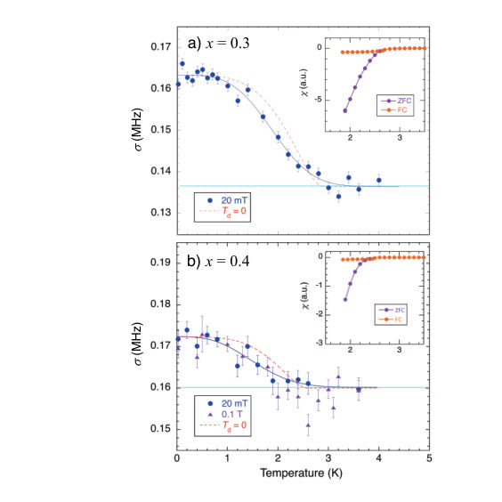
<figcaption class="paper-figure-caption"><b>Fig 2.</b> FIG. 2. (Color online). Temperature dependence of the Gaussian linewidth σ observed in the sample with Zn content x = 0.3 (a, PSI) and 0.4 (b, TRIUMF) . Solid line shows the result of curve fit using Eqs. (6) and (7), and dashed line shows expected behavior of σ with- out the distribution of Tc. Dotted horizontal lines correspond to σn in Eq. (3). Inset: magnetic susceptibility measured above 1.85 K under field-cool (FC) and zero-field-cool (ZFC) conditions.</figcaption>
</figure>
<figure class="paper-figure-card">
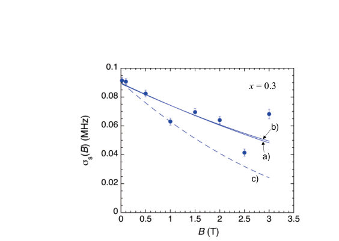
<figcaption class="paper-figure-caption"><b>Fig 3.</b> FIG. 3. (Color online). σs versus B obtained at 0.1 K for the sample with x = 0.3. Solid lines show the result of curve fits (a) using Eq. (9) with Bc2(0) as a free parameter, or (b) using Eq. (10) with σc as a free parameter. Dashed line (c) shows Eq. (9) with Bc2(0) = 5.41 T.</figcaption>
</figure>
</div>
<p><strong>Summary.</strong> This study uses muon spin rotation ($\mu$SR) to probe superconductivity in $    ext{Cu}_{1-x}   ext{Zn}_x   ext{Ir}_2   ext{S}_4$, a material near a metal-insulator transition. The results confirm an s-wave superconducting gap, arguing that high levels of electronic disorder force the pairing symmetry into an isotropic form. This suggests that strong scattering can stabilize superconductivity in correlated materials operating near fundamental physical limits.</p>
<p><strong>Why it may be interesting.</strong> The work provides experimental evidence on how strong electronic disorder can stabilize an isotropic s-wave superconducting state even when underlying physics suggests complex, anisotropic pairing mechanisms typical of strongly correlated electron systems.</p>
<details>
<summary>Detailed structure</summary>
<p><strong>Main problem.</strong> Investigating superconductivity in Zn-substituted thiospinel $    ext{Cu}_{1-x}   ext{Zn}_x   ext{Ir}_2   ext{S}_4$ and understanding how disorder affects the pairing mechanism near a metal-insulator transition.</p>
<p><strong>Main result.</strong> The superconducting state is confirmed to be an isotropic, fully gapped s-wave, robustly surviving deep within the dirty limit despite strong electronic correlations suggesting unconventional pairing.</p>
<p><strong>Method.</strong> Transverse-field muon spin rotation ($\mu$SR) measurements are used to probe the temperature and field dependence of the superfluid density, complemented by normal state resistivity measurements.</p>
<p><strong>Model / system.</strong> The system is the thiospinel $  ext{CuIr}_2 ext{S}_4$, which undergoes an MI transition. Zn substitution induces superconductivity ($T_c \approx 2-3$ K). The analysis framework incorporates concepts from the dirty limit and proximity to Mott-Ioffe-Regel limits.</p>
<p><strong>Key observables.</strong> Superfluid density ($\sigma_s$), magnetic penetration depth ($\lambda$), temperature dependence of $\mu$SR linewidth, normal state resistivity ($
ho$).</p>
<p><strong>Important parameters / regimes.</strong> Disorder parameter (implied by high $
ho$, placing system in dirty limit), coherence length ($\xi_0$), critical temperature ($T_c$), and the degree of electronic disorder.</p>
<p><strong>Assumptions / limitations.</strong> The superfluid density follows a two-fluid model approximation, and the analysis assumes that strong scattering averages out potential anisotropy expected from unconventional pairing mechanisms.</p>
<p><strong>Figures summary.</strong> Figures show $\mu$SR time spectra demonstrating temperature-dependent relaxation below $T_c$, and plots analyzing linewidth ($\sigma$) vs. temperature/field, confirming s-wave behavior.</p>
<p><strong>Paper structure.</strong> The paper establishes the background (MI transition in $   ext{CuIr}_2 ext{S}_4$), presents $\mu$SR results showing s-wave pairing, discusses the implications of high resistivity placing it in the dirty limit, and proposes a unified framework linking disorder to superconductivity.</p>
</details>
<details>
<summary>Abstract</summary>
<p>The thiospinel CuIr$_2$S$_4$ undergoes a metal-insulator transition below $\approx$230 K, which is suppressed by substitution of Cu with Zn (Cu$_{1-x}$Zn$_x$Ir$_2$S$_4$) to induce superconductivity for $0.2\lesssim x\lesssim0.8$. We show that the temperature/field dependence of superfluid density in samples with $x = 0.3$ and 0.4 ($T_{\rm c} \approx 3$ K and 2.5 K) investigated by muon spin rotation and relaxation ($μ$SR) is consistent with a fully gapped $s$-wave pairing. Meanwhile, the relatively high resistivity (10$^{-3}$-10$^{-2}$ $Ω\:$cm) in their normal state suggests that the superconductivity is in the "dirty limit" where the mean free path is much shorter than the coherence length ($\ell \ll ξ_0$). This indicates that the potential anisotropy associated with unconventional pairing mechanisms expected under the strong electron correlations is smeared out by the electron scattering. Based on these observations, we discuss potential link between the Zn substitution-induced superconductivity and that recently discovered in CuIr$_2$S$_4$ under high pressure ($>18$ GPa) where the existence of strong electron scattering is also suggested.</p>
</details>
<p><sub><a href="#top">↑ back to top</a></sub></p>

<p><a id="paper-2607.03983"></a></p>
<h3 id="verification-of-quantum-computations-hardware-efficient-security-proofs"><a href="http://arxiv.org/abs/2607.03983v1">Verification of Quantum Computations: Hardware-Efficient Security Proofs</a></h3>
<p><strong>Authors:</strong> Harold Ollivier<br>
<strong>Type:</strong> theory · <strong>Category:</strong> quantum information and computing · <strong>PDF:</strong> <a href="https://arxiv.org/pdf/2607.03983v1">https://arxiv.org/pdf/2607.03983v1</a><br>
<strong>Analysis basis:</strong> full PDF text, analyzed in chunks</p>
<div class="figure-strip-hint">↔ Scroll figures horizontally</div>
<div class="paper-figures-scroll">
<figure class="paper-figure-card">
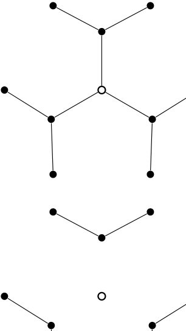
<figcaption class="paper-figure-caption"><b>Fig 1.</b> Figure 2.3: Breaking: The initial graph (up) is broken by preparing the empty node in |0⟩state (down).</figcaption>
</figure>
<figure class="paper-figure-card">
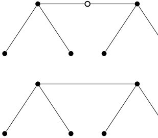
<figcaption class="paper-figure-caption"><b>Fig 2.</b> Figure 2.4: Bridging: The initial graph (up) is bridged by measuring the empty node in Y (down).</figcaption>
</figure>
<figure class="paper-figure-card">
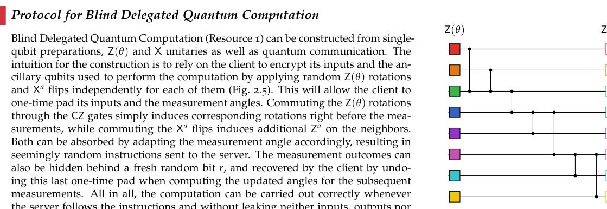
<figcaption class="paper-figure-caption"><b>Fig 3.</b> Figure 2.5: Initial graph state (up), circuit preparing the graph state (middle), equivalent circuit with inserted random Z(θ) rotations (colored boxes) compensated by the conjugated rotation Z(−θ) before the measurement (down). Protocol 2. Universal Blind Quantum Computation (UBQC)</figcaption>
</figure>
<figure class="paper-figure-card">

<figcaption class="paper-figure-caption"><b>Fig 4.</b> Figure 2.6: Correctness of UBQC for three-vertex linear graph. (a) UBQC Protocol with the explicit values of δ(i). (b) The Z encryption commutes through the CZ gates and is canceled out by the later Z rotation. (c) The input X encryption commutes through the CZ gates but adds a Z on qubit 2, which is canceled out by the a(1)π inside the rotation. The X on qubit 1 is commuted through the rotation and absorbed by the measurement. The result is Alice’s desired MBQC computation up to Pauli corrections and bit-flips.</figcaption>
</figure>
<figure class="paper-figure-card">
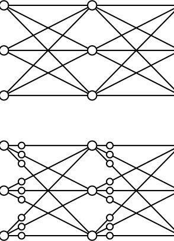
<figcaption class="paper-figure-caption"><b>Fig 5.</b> Figure 2.7: The graph G (up), the corresponding triple graph (middle) and dotted triple graph (down).</figcaption>
</figure>
</div>
<p><strong>Summary.</strong> This paper addresses the challenge of verifying quantum computations performed by untrusted quantum servers using hardware-efficient security protocols. It introduces a modular framework that breaks down verification into manageable primitives like remote state preparation and error detection. The work provides an architectural guide to making these complex security proofs practical for real-world, noisy quantum devices.</p>
<p><strong>Why it may be interesting.</strong> It provides an architectural roadmap for making quantum security proofs practical by systematically reducing hardware overheads, which is crucial for bridging theory and near-term quantum hardware.</p>
<details>
<summary>Detailed structure</summary>
<p><strong>Main problem.</strong> The core problem is developing methods for a classically limited verifier to confirm the output of an untrusted, fully quantum server performing complex computations.</p>
<p><strong>Main result.</strong> The paper proposes a modular framework that systematically relaxes hardware requirements by decomposing verification into independent primitives like remote state preparation and trap-based deviation detection.</p>
<p><strong>Method.</strong> It synthesizes various advanced protocols (e.g., Robust VBQC) using concepts from interactive proof systems, composability theorems, and error detection to build practical security guarantees.</p>
<p><strong>Model / system.</strong> The model involves an interaction between a Verifier (classical/limited quantum resources) and an untrusted Prover (BQP machine). The focus is on abstract protocols rather than a specific physical hardware implementation.</p>
<p><strong>Key observables.</strong> Statistical soundness, indistinguishability ($\epsilon$-statistical), computational complexity class (e.g., BQP vs. classical limits).</p>
<p><strong>Important parameters / regimes.</strong> Error tolerance ($\epsilon$), number of qubits/parties in multi-party settings, and the level of fault tolerance required.</p>
<p><strong>Assumptions / limitations.</strong> The authors assume the existence of underlying cryptographic primitives and focus on architectural principles rather than deriving all technical proofs themselves.</p>
<p><strong>Paper structure.</strong> The paper is structured conceptually: first, defining the problem space (verification gap); second, introducing a modular framework composed of independent verification primitives; third, showing how these primitives can be combined to address increasingly complex scenarios like multi-party and fault-tolerant computation.</p>
</details>
<details>
<summary>Abstract</summary>
<p>How can a user with limited quantum resources verify the output of an untrusted, fully quantum server? This manuscript provides a conceptual synthesis of some recent developments toward answering this question under statistical (information-theoretic) security. Rather than duplicating the dense technical proofs of the underlying publications, our focus here is on the physical motivations, the structural connections between different protocols, and the path toward hardware-efficient implementation.   We begin by introducing a modular, composable framework that partitions verification into three distinct, independent primitives: remote state preparation, trap-based deviation detection, and error-correcting embedding. Using this framework, we show how the demanding hardware requirements of early protocols can be systematically relaxed. We review schemes that eliminate the spatial overhead, remove the need to prepare computational-basis dummy states, and replace single-photon sources with trusted local rotations or weak coherent pulses. Finally, we examine how these techniques scale, both to asymmetric multi-party settings and to the delegation of fully fault-tolerant computations in the presence of gate-level noise. This document is intended as a guide to the architectural principles of practical quantum verification.</p>
</details>
<p><sub><a href="#top">↑ back to top</a></sub></p>
</details>
<h2 id="secondary-cond-mat-archives">Secondary cond-mat archives</h2>
<p><em>Papers from cond-mat.mtrl-sci, mes-hall, other, soft, supr-con. These archives are de-prioritized — they appear at the end regardless of relevance score.</em></p>
<h3 id="relevant-in-secondary-archives-36">Relevant in secondary archives (36)</h3>

<p><a id="paper-2607.03965"></a></p>
<h3 id="katsura-nagaosa-balatsky-magnetoelectricity-in-molecular-magnets-bipartite-entanglement-transfer-by-means-of-rotating-electric-field"><a href="http://arxiv.org/abs/2607.03965v1">Katsura-Nagaosa-Balatsky magnetoelectricity in molecular magnets: Bipartite entanglement transfer by means of rotating electric field</a></h3>
<p><strong>Authors:</strong> Zhirayr Adamyan, Ani Chobanyan, Vadim Ohanyan, Azadeh Ghannadan, Jozef Strecka, Saeed Haddadi, Hamid Arian Zad<br>
<strong>Type:</strong> theory · <strong>Category:</strong> other · <strong>PDF:</strong> <a href="https://arxiv.org/pdf/2607.03965v1">https://arxiv.org/pdf/2607.03965v1</a><br>
<strong>Analysis basis:</strong> full PDF text, analyzed in chunks
<strong>Topic relevance:</strong> 🔥 <code>entanglement &amp; information structure</code> <strong>5/5</strong> · 🔥 <code>analog quantum simulation</code> <strong>4/5</strong> · <code>exotic spin models in light-matter</code> <strong>3/5</strong> · <code>spintronics-quantum-optics interface</code> <strong>3/5</strong> · <code>non-equilibrium dynamics</code> <strong>2/5</strong> · <code>Keldysh / 2PI / non-Gaussian methods</code> <strong>1/5</strong> · <code>correlated / nonlocal dissipation</code> <strong>1/5</strong> · <code>driven-dissipative phase transition</code> <strong>1/5</strong> · <code>methods for driven-dissipative</code> <strong>1/5</strong></p>
<div class="figure-strip-hint">↔ Scroll figures horizontally</div>
<div class="paper-figures-scroll">
<figure class="paper-figure-card">
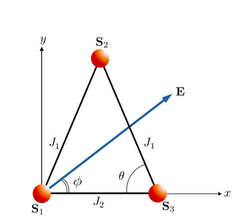
<figcaption class="paper-figure-caption"><b>Fig 1.</b> FIG. 1. Schematic illustration of the three-spin molecu- lar cluster with an isosceles triangular geometry. The lo- calized S = 1/2 spins interact via two antiferromagnetic exchange couplings, J1 and J2, and are subjected to an external electric field E lying in the plane of the trian- gle. The geometry of the molecule is characterized by the bond angle θ, while the electric-field orientation is speci- fied by the angle ϕ. Within the KNB mechanism, the spin–electric-field coupling is mediated through bond- dependent DM interactions, whose magnitude and direc- tion are determined by both the molecular geometry and the electric-field orientation. Consequently, the parame- ters θ and ϕ provide...</figcaption>
</figure>
<figure class="paper-figure-card">

<figcaption class="paper-figure-caption"><b>Fig 2.</b> FIG. 2. Dependence of the saturation magnetic field Bsat on the parameters of the in-plane electric field for the case of uniform KNB coupling (α = 1). (a) Satu- ration field as a function of the electric-field magnitude E/J2 for a fixed field orientation, ϕ = π/4. The curves are shown for several values of the exchange-coupling ratio J1/J2 and bond angle θ, illustrating how the elec- tric field modifies the critical magnetic field required to fully polarize the spin trimer. (b) Angular dependence of the saturation field for a rotating electric field of fixed magnitude, E/J2 = 5, for the same sets of model pa- rameters. The anisotropic variation of Bsat with the electric-field direction...</figcaption>
</figure>
<figure class="paper-figure-card">

<figcaption class="paper-figure-caption"><b>Fig 3.</b> FIG. 3. Bipartite negativity dependence on the magni- tude of electric field, E, with J1 = J2 = 1, α = 1 and θ = π/4 for four different values of the electric field an- gle, ϕ = 0, π/4, π/2 and 3π/4.</figcaption>
</figure>
<figure class="paper-figure-card">

<figcaption class="paper-figure-caption"><b>Fig 4.</b> FIG. 4. Bipartite negativity dependence on the direction of electric field, ϕ, with J1 = J2 = 1 and θ = π/3. Three panels present Nij for different values of α and electric field magnitude. Panel (a): α = 1, E/J2 = 0.01; panel (b): α = 2/3, E/J2 = 1.125; and panel (c): α = 3/2, E/J2 = 1.15. The blue, red and green lines correspond to N12, N13 and N23 respectively.</figcaption>
</figure>
<figure class="paper-figure-card">
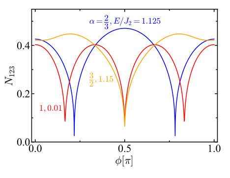
<figcaption class="paper-figure-caption"><b>Fig 5.</b> FIG. 5. Tripartite negativity dependence on the direc- tion of electric field ϕ for the three particular cases, which correspond to the parameter sets used in Fig. 4(a): red curve; 4(b): blue curve; and 4(c): orange curve.</figcaption>
</figure>
</div>

<p><strong>Summary.</strong> The paper explores how magnetoelectric coupling (KNB mechanism) allows external electric fields to manipulate quantum entanglement within a molecular nanomagnet. By applying a rotating electric field, the researchers demonstrate a controllable transfer of bipartite entanglement between different spin pairs. This establishes these molecular magnets as promising platforms for electrically steering and localizing quantum information at the nanoscale.</p>
<p><strong>Why it may be interesting.</strong> This work directly addresses electrical control over quantum correlations in solid-state molecular systems, which is highly relevant for developing nanoscale quantum devices where local electric fields can manipulate spin states.</p>
<details>
<summary>Detailed structure</summary>
<p><strong>Main problem.</strong> The study investigates how quantum entanglement can be controlled and transferred between different spin pairs within a molecular magnet using the Katsura-Nagaosa-Balatsky (KNB) magnetoelectric coupling mechanism.</p>
<p><strong>Main result.</strong> A rotating in-plane electric field allows for the controllable, nearly ideal transfer of bipartite entanglement between spin pairs, establishing these magnets as platforms for electrical quantum state engineering.</p>
<p><strong>Method.</strong> The analysis involves calculating and mapping various measures of quantum entanglement (bipartite and tripartite negativity) derived from the system's Hamiltonian eigenstates.</p>
<p><strong>Model / system.</strong> The model is a spin-1/2 Heisenberg trimer with an isosceles triangular geometry, incorporating spin-induced electric polarization via the KNB mechanism. The dynamics are governed by a Hamiltonian including exchange couplings ($J_1, J_2$) and an electric field interaction term.</p>
<p><strong>Key observables.</strong> Bipartite negativity ($N_{ij}$) and tripartite negativity ($N_{ABC}$), which quantify quantum entanglement; also analyzed are the saturation magnetic field ($B_{	ext{sat}}$).</p>
<p><strong>Important parameters / regimes.</strong> Electric field magnitude ($E$), orientation ($\phi$), bond angle ($  heta$), exchange coupling ratios ($J_1/J_2$), and non-uniformity parameter ($\alpha$).</p>
<p><strong>Assumptions / limitations.</strong> The system is modeled using a spin-1/2 Heisenberg Hamiltonian for a trinuclear molecule, and the analysis focuses on ground state properties.</p>
<p><strong>Figures summary.</strong> Figures illustrate how bipartite negativity varies with the electric field angle $\phi$ (showing distinct lines for different pairs) and density plots mapping entanglement extrema over the $(\alpha, E/J_2)$ parameter space.</p>
<p><strong>Paper structure.</strong> The paper develops by first defining the Hamiltonian incorporating KNB coupling, then analyzing the system's ground states and magnetic saturation field dependence on external fields. The core is dedicated to calculating and demonstrating the controllable transfer of bipartite entanglement using varying electric field parameters.</p>
</details>
<details>
<summary>Abstract</summary>
<p>We investigate quantum entanglement in a spin-1/2 Heisenberg trimer with spin-induced electric polarization described by the Katsura-Nagaosa-Balatsky (KNB) mechanism in the presence of external magnetic and electric fields. The electric field is assumed to lie in the plane of the magnetic ions, allowing its strength and orientation to be tuned independently. We analyze both bipartite and tripartite entanglement and demonstrate that the spin-electric-field coupling provides an efficient mechanism for controlling quantum correlations within the molecular nanomagnet. Depending on the electric-field parameters, the bipartite entanglement can be significantly enhanced or suppressed, while the multipartite entanglement exhibits a rich dependence on the microscopic spin-electric coupling. Most notably, we demonstrate that a rotating in-plane electric field of constant magnitude induces a controllable transfer of bipartite entanglement between different spin pairs. In the symmetric case of homogeneous exchange interactions and uniform KNB coupling, this transfer is found to be nearly ideal, with the bipartite negativity approaching its theoretical maximum for one spin pair while simultaneously vanishing for the remaining pairs. We show that the efficiency of the transfer can be tailored through the exchange interactions, bond geometry, and nonuniform spin-electric coupling. These results establish molecular nanomagnets with KNB spin-electric coupling as a promising platform for the electrical manipulation, steering, and localization of quantum entanglement at the molecular scale.</p>
</details>
<p><sub><a href="#top">↑ back to top</a></sub></p>

<p><a id="paper-2607.03873"></a></p>
<h3 id="quench-glow-or-stay-silent-distance-controlled-up-conversion-emission-near-metallic-nanowires"><a href="http://arxiv.org/abs/2607.03873v1">Quench, Glow, or Stay Silent: Distance-Controlled Up-Conversion Emission near Metallic Nanowires</a></h3>
<p><strong>Authors:</strong> Maciej Cwierzona, Michal Zebrowski, Pavel Dziarhai, Joanna Niedziolka-Jonsson, Martin Jonsson-Niedziolka, Marcin Nyk, Sebastian Mackowski, Dawid Piatkowski<br>
<strong>Type:</strong> experiment · <strong>Category:</strong> other · <strong>PDF:</strong> <a href="https://arxiv.org/pdf/2607.03873v1">https://arxiv.org/pdf/2607.03873v1</a><br>
<strong>Analysis basis:</strong> full PDF text, analyzed in chunks
<strong>Topic relevance:</strong> 🔥 <code>correlated / nonlocal dissipation</code> <strong>4/5</strong> · <code>Tavis-Cummings &amp; cavity-many-emitter</code> <strong>3/5</strong> · <code>correlated cavity matter</code> <strong>3/5</strong> · <code>driven-dissipative phase transition</code> <strong>3/5</strong> · <code>non-equilibrium dynamics</code> <strong>3/5</strong> · <code>quantum optics experiment</code> <strong>3/5</strong> · <code>analog quantum simulation</code> <strong>2/5</strong> · <code>methods for driven-dissipative</code> <strong>2/5</strong> · <code>non-equilibrium universality</code> <strong>2/5</strong> · <code>Dicke superradiance</code> <strong>1/5</strong> · <code>Keldysh / 2PI / non-Gaussian methods</code> <strong>1/5</strong> · <code>Kondo &amp; dissipative impurity</code> <strong>1/5</strong> · <code>entanglement &amp; information structure</code> <strong>1/5</strong> · <code>interference shaping light</code> <strong>1/5</strong> · <code>measurement-induced transitions</code> <strong>1/5</strong> · <code>quantum measurements</code> <strong>1/5</strong></p>
<div class="figure-strip-hint">↔ Scroll figures horizontally</div>
<div class="paper-figures-scroll">
<figure class="paper-figure-card">
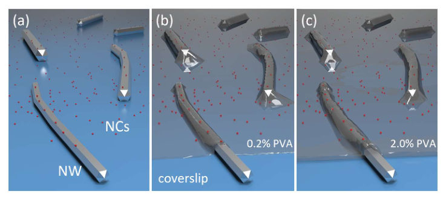
<figcaption class="paper-figure-caption"><b>Fig 1.</b> Fig. 1. Schematic illustration of controlled spatial geometry of up-conversion NCs and silver NWs. Increasing the thickness of the PVA film in the sequence (a)-(c) provides a means to systematically vary their spatial separation.</figcaption>
</figure>
<figure class="paper-figure-card">

<figcaption class="paper-figure-caption"><b>Fig 2.</b> Fig. 2. (a) SEM image of silver nanowires deposited on a conductive carbon foil. (b) Scanning transmission electron microscopy (STEM) images of nanowires (upper panel) illustrating the surrounding PVP polymer layer, with corresponding images acquired using a through-lens detector (TLD) shown in the lower panel for comparison. (c) Absorbance spectrum of the silver nanowire colloid.</figcaption>
</figure>
<figure class="paper-figure-card">
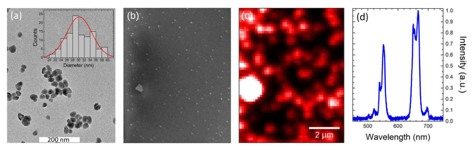
<figcaption class="paper-figure-caption"><b>Fig 3.</b> Fig. 3. (a) TEM image of the NaYF4:Er3+/Yb3+ NCs together with a histogram illustrating the statistical size distribution. (b) SEM image of individual NCs dispersed on a glass substrate (S00) and the corresponding PL image of the same sample area (c). Only minimal agglomeration is observed, which is easily distinguishable in both SEM and PL images. (d) Emission spectrum of a single NC under 980 nm excitation.</figcaption>
</figure>
<figure class="paper-figure-card">

<figcaption class="paper-figure-caption"><b>Fig 4.</b> Fig. 4. Photoluminescence intensity maps of individual up-conversion NCs acquired for samples S00, S20, and S65 (a-c), together with the corresponding maps of elastically back-scattered laser light (d-f), illustrating the spatial distribution of NWs. The white dashed lines indicate the positions of the NWs. The PL maps were obtained by recording the red up- conversion emission of the NCs under 980 nm laser excitation. The inset in panel (a) shows an SEM image of a bare silver nanowire with attached nanocrystals. The scale bar represents 200 nm.</figcaption>
</figure>
<figure class="paper-figure-card">
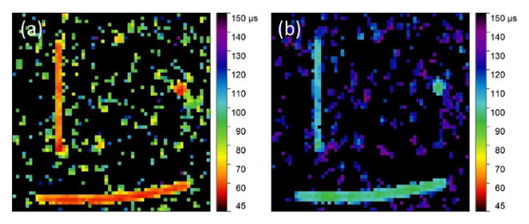
<figcaption class="paper-figure-caption"><b>Fig 5.</b> Fig. 5. μs-FLIM maps of the up-conversion emission recorded for sample S20, acquired from the same sample region as shown in Fig. 4b,e. Panel (a) shows the green emission, while panel (b) corresponds to the red emission of the NCs. Both maps were obtained under 980 nm laser excitation using a pulsed excitation scheme with a pulse duration of 20 µs. The color scale represents the extracted luminescence lifetime values.</figcaption>
</figure>
</div>

<p><strong>Summary.</strong> This experiment demonstrates precise control over up-conversion luminescence by placing rare-earth nanocrystals near metallic nanowires separated by a polymer spacer. By tuning this separation distance, the emission can be switched between quenching, plasmonically enhanced glowing, or isolated behavior. This offers a powerful tool for designing nanophotonic structures with tailored optical properties.</p>
<p><strong>Why it may be interesting.</strong> This work provides a clean experimental platform to study open quantum systems dynamics (energy relaxation) where coupling to an external environment (the plasmonic metal) can be tuned deterministically via geometry. The measurement of decay rate changes directly probes the modification of the local photonic density of states, which is central to cavity QED and open system theory.</p>
<details>
<summary>Detailed structure</summary>
<p><strong>Main problem.</strong> The study aims to achieve precise, distance-controlled manipulation of energy decay pathways in up-conversion luminescence by controlling the separation between rare-earth nanocrystals and metallic nanowires.</p>
<p><strong>Main result.</strong> By tuning the polymer spacer thickness, the emission can be deterministically switched between three regimes: quenching (direct contact), plasmonic enhancement (intermediate distance), and effective decoupling (large distance).</p>
<p><strong>Method.</strong> The researchers used time-resolved fluorescence lifetime imaging microscopy ($\mu$s-FLIM) on single nanostructures to map luminescence intensity and decay times as a function of the emitter-metal separation.</p>
<p><strong>Model / system.</strong> The physical system is a hybrid nanostructure comprising $  ext{NaYF}_4:    ext{Er}^{3+}/   ext{Yb}^{3+}$ up-conversion nanocrystals placed near silver nanowires, separated by a polymer spacer layer (PVA).</p>
<p><strong>Key observables.</strong> Luminescence intensity maps and fluorescence decay times ($    au$) measured via $\mu$s-FLIM.</p>
<p><strong>Important parameters / regimes.</strong> The separation distance ($d$), controlled by the PVA thickness (e.g., $0 	ext{ nm}$, $20 	ext{ nm}$, $65 	ext{ nm}$), is the key tuning parameter.</p>
<p><strong>Assumptions / limitations.</strong> The analysis assumes that eliminating residual polymer layers allows for unambiguous interpretation of distance-dependent effects, and that the observed enhancement/quenching reflects controlled coupling to plasmon modes.</p>
<p><strong>Figures summary.</strong> Figures illustrate the schematic control over geometry using PVA thickness (Fig. 1), show PL intensity maps demonstrating quenching vs. enhancement based on separation (Fig. 4), and map decay times confirming changes in radiative rates (Fig. 5).</p>
<p><strong>Paper structure.</strong> The paper systematically presents sample preparation details, followed by characterization of the three distinct interaction regimes—quenching, enhancement, and decoupling—using PL imaging and time-resolved lifetime measurements.</p>
</details>
<details>
<summary>Abstract</summary>
<p>We demonstrate controlled transitions between competing radiative and nonradiative decay channels in the up-conversion luminescence of NaYF4:Er3+/Yb3+ nanocrystals placed in proximity to metallic nanowires. The nanocrystal-nanowire separation is used as a key control parameter governing the optical response. An essential aspect of our approach is the removal of inhomogeneous residual polymer layers from the nanowires, eliminating any compromise on distance control and reproducibility in emitter-metal hybrid nanostructures. Replacing them with a well-defined polymer spacer yields controlled access to three qualitatively distinct interaction regimes: luminescence quenching, plasmonic enhancement, and effective decoupling. Transitions between these regimes are shown to reflect changes in the dominant energy relaxation pathways: from nonradiative losses in direct contact with the metal, through modification of the local photonic density of states and coupling to plasmon-mediated modes, to behavior characteristic of quasi-isolated emitters. The plasmonic origin of the emission enhancement in the intermediate regime is evidenced by an increase in luminescence intensity accompanied by shortened decay times, as revealed by fluorescence lifetime imaging microscopy of up-conversion nanocrystals. All experiments were performed on single nanostructures, thereby excluding artefacts arising from aggregation effects and strengthening the interpretation of the observed phenomena. The presented approach provides controlled access to plasmon-modified decay channels and offers a basis for the rational design of functional nanophotonic and sensing structures with tailored optical properties.</p>
</details>
<p><sub><a href="#top">↑ back to top</a></sub></p>

<p><a id="paper-2607.04968"></a></p>
<h3 id="lindblad-theory-of-linear-response-susceptibility-and-dispersive-readout-in-minimal-kitaev-junctions"><a href="http://arxiv.org/abs/2607.04968v1">Lindblad theory of linear response susceptibility and dispersive readout in minimal Kitaev junctions</a></h3>
<p><strong>Authors:</strong> Tobias Kuhn, Raffael L. Klees, Ramón Aguado, Mónica Benito<br>
<strong>Type:</strong> theory · <strong>Category:</strong> other · <strong>PDF:</strong> <a href="https://arxiv.org/pdf/2607.04968v1">https://arxiv.org/pdf/2607.04968v1</a><br>
<strong>Analysis basis:</strong> full PDF text, analyzed in chunks
<strong>Topic relevance:</strong> 🔥 <code>methods for driven-dissipative</code> <strong>4/5</strong> · 🔥 <code>quantum measurements</code> <strong>4/5</strong> · <code>Keldysh / 2PI / non-Gaussian methods</code> <strong>3/5</strong> · <code>correlated / nonlocal dissipation</code> <strong>3/5</strong> · <code>driven-dissipative phase transition</code> <strong>3/5</strong> · <code>QC/QI experiment</code> <strong>2/5</strong> · <code>non-equilibrium dynamics</code> <strong>2/5</strong> · <code>non-equilibrium universality</code> <strong>2/5</strong> · <code>spintronics-quantum-optics interface</code> <strong>2/5</strong> · <code>Kondo &amp; dissipative impurity</code> <strong>1/5</strong> · <code>analog quantum simulation</code> <strong>1/5</strong> · <code>correlated cavity matter</code> <strong>1/5</strong> · <code>measurement-induced transitions</code> <strong>1/5</strong></p>
<div class="figure-strip-hint">↔ Scroll figures horizontally</div>
<div class="paper-figures-scroll">
<figure class="paper-figure-card">
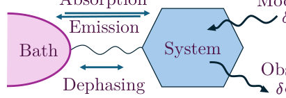
<figcaption class="paper-figure-caption"><b>Fig 1.</b> FIG. 1. We introduce a parameter fluctuation δf(t) into a system that interacts with a Markovian bath. System and environmental dynamics due to absorption, emission and de- phasing will be read out in observable A.</figcaption>
</figure>
<figure class="paper-figure-card">
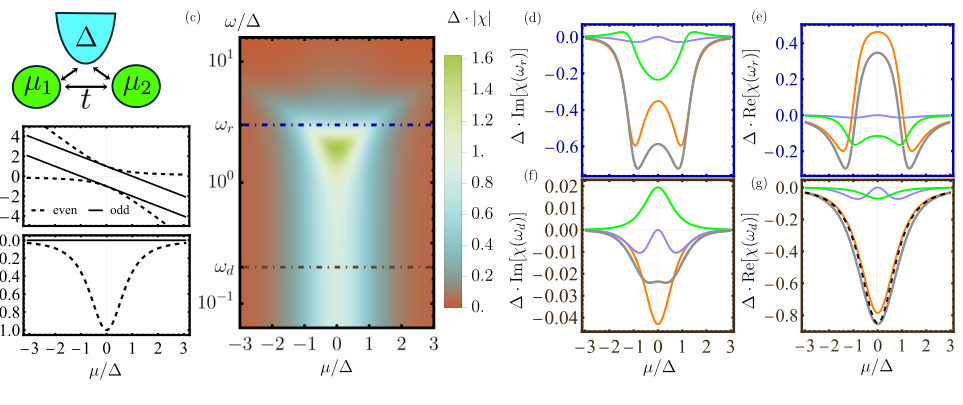
<figcaption class="paper-figure-caption"><b>Fig 2.</b> FIG. 2. Common gate spectroscopy on a minimal Kitaev chain. (a) Two quantum dots with onsite energies µ1 and µ2 are proximitized by a superconductor. Induced crossed Andreev reflection ∆and direct elastic cotunneling t mediate the hopping between the dots. (b) Energy spectrum E and quantum capacitance CQ (normalized by its maximal value |CQ|max) in the odd- and even-parity subspaces as a function of the average onsite energy µ = (µ1 + µ2)/2. (c) Modulus of the total susceptibility |χ| from Eq. (6) for different probe frequencies ω and average onsite energies µ. A resonant regime at ω ≈ωr and a dispersive regime at ω ≈ωd emerge. (d-g) Imaginary and real part of the total susceptibility χ and...</figcaption>
</figure>
<figure class="paper-figure-card">

<figcaption class="paper-figure-caption"><b>Fig 3.</b> Fig. 2f shows the imaginary part of the susceptibility in the dispersive regime (ωd ≪ϵ). Both Hermes and Hamil- tonian contributions are small (O(ω/ϵ)) and for ΓT2 ≪ϵ they are related via Im[χL,DB(ωd)] ≃−Im[χH(ωd)]/2. At higher temperatures, the Sisyphus term becomes dom- inant and leads to the double-peak structure. In Fig 2g, we compare the quantum capacitance, which measures the band curvature, with the real part of the total sus- ceptibility. Since Re[χL,DB(ωd)] ≃Γ2 T2 Re[χH(ωd)]/ϵ2, the contribution χL compensates for the decoherence on χH. By explicitly rearranging the Hermes and Hamiltonian contributions according to Eq. (C4), we see that</figcaption>
</figure>
<figure class="paper-figure-card">
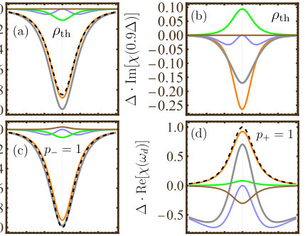
<figcaption class="paper-figure-caption"><b>Fig 4.</b> FIG. 3. Susceptibility of the minimal Kitaev chain for ther- mal populations near resonance (ω ≲ϵ) for (a) real and (b) imaginary values. Real valued susceptibility when (c) the ground state is fully populated or (d) the excited state is fully populated. χL,BT refers to the beyond thermalization terms of Hermes contribution while χL,DB denotes detailed balance terms. Other parameters are identical to Fig. 2.</figcaption>
</figure>
<figure class="paper-figure-card">
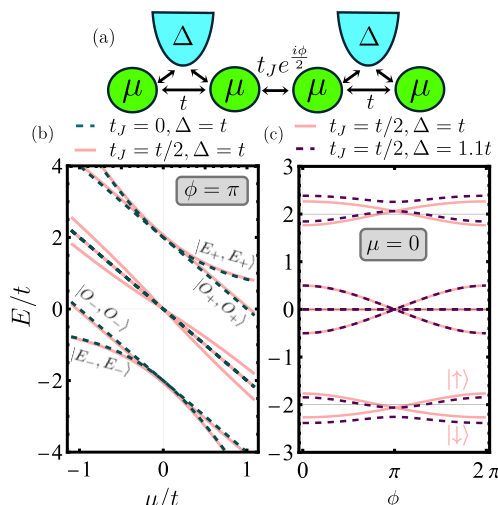
<figcaption class="paper-figure-caption"><b>Fig 5.</b> FIG. 4. (a) Two minimal Kitaev chains tunnel coupled with tJ form a Kitaev-Josephson Junction (KJJ). The supercon- ducting leads have a phase difference of ϕ. (b) Common gate spectrum for decoupled (green, dashed) and coupled (salmon, solid) KJJ in even global parity at ϕ = π and ∆= t. |E±/O±, E±/O±⟩are many-body eigenstates of the decoupled minimal Kitaev chains corresponding to local even/odd par- ity. At ϕ = π, coupled KJJ eigenstates follow these states up to first order in tJ, see Eqs. (E14) (c) Flux spectrum comparing sweet spot ∆= t (salmon, solid) with a detuned ∆= 1.1t (purple, dashed) system at µ = 0. The states the |↑/↓⟩= |E−, E−⟩± |O−, O−⟩+ O(tJ) correspond to the (anti-...</figcaption>
</figure>
</div>

<p><strong>Summary.</strong> This paper introduces a sophisticated Lindblad-based linear response formalism to accurately characterize the electrical response of complex hybrid superconductor-semiconductor quantum dots. It moves beyond standard Kubo treatments by incorporating non-unitary effects via 'Hermes' and 'Sisyphus' susceptibilities. The theory is demonstrated on Kitaev chain models, showing how these advanced terms are crucial for correctly interpreting measurements like qubit readout fidelity.</p>
<p><strong>Why it may be interesting.</strong> This work is highly relevant to AMO physics and open quantum systems as it provides advanced tools (Lindblad response theory) to model dissipation and measurement back-action in solid-state quantum devices like superconducting qubits.</p>
<details>
<summary>Detailed structure</summary>
<p><strong>Main problem.</strong> The paper addresses the need for a comprehensive theoretical framework to understand the response of complex hybrid superconductor-semiconductor quantum dots (SCQDs) to external probes and environmental dissipation.</p>
<p><strong>Main result.</strong> It demonstrates that a full Lindblad linear response formalism is necessary, showing that contributions like 'Hermes' terms compensate decoherence effects in dispersive readout and provide corrections beyond simple thermalized state approximations.</p>
<p><strong>Method.</strong> The authors develop and apply a Lindblad-based linear response formalism to calculate the system susceptibility ($\chi$), decomposing it into static, Hamiltonian, Sisyphus, and Hermes contributions.</p>
<p><strong>Model / system.</strong> The primary model is hybrid SCQD devices, exemplified by quantum dot-based Kitaev chain setups used for Majorana-based parity qubits. Dynamics are governed by a Lindblad master equation, and the analysis focuses on calculating susceptibility components derived from this formalism.</p>
<p><strong>Key observables.</strong> Linear-response susceptibility ($\chi(\omega)$), Quantum Capacitance ($C_Q$), static susceptibility ($\chi_{st}$), Hamiltonian contribution ($\chi_H$), Sisyphus susceptibility ($\chi_\Gamma$), and Hermes susceptibility ($\chi_L$).</p>
<p><strong>Important parameters / regimes.</strong> Frequency ($\omega$), temperature ($T$), coupling strength ($\Delta, t$), and detuning parameters.</p>
<p><strong>Assumptions / limitations.</strong> The derivation relies on the Born-Markov approximations (weakly coupled environment with no memory) and analyzes the system within the linear response regime.</p>
<p><strong>Figures summary.</strong> Figures illustrate parameter fluctuations contributing to observables, compare various susceptibility terms ($\chi_{st}, \chi_H, \chi_\Gamma, \chi_L$) against theoretical predictions like band curvature, and show parity state differentiation in common gate spectroscopy.</p>
<p><strong>Paper structure.</strong> The paper introduces the general Lindblad linear response formalism for N-level systems. It then applies this theory to minimal Kitaev junctions, deriving specific expressions for the four susceptibility components ($\chi_{st}, \chi_H, \chi_\Gamma, \chi_L$). Finally, it analyzes these contributions in the context of quantum capacitance and parity state spectroscopy.</p>
</details>
<details>
<summary>Abstract</summary>
<p>The field of hybrid superconductor-semiconductor quantum dots is advancing toward the development of functional devices that leverage the advantages of both types of materials. However, the inherent complexity of these devices demands a comprehensive theoretical framework for a complete understanding of their responses to external probes, readout and the dissipation arising from environmental coupling. We present a Lindblad-based linear response formalism that captures the multi-level nature of these devices, their probe-readout flexibility, and the non-unitary effects of finite-frequency response, including the so-called Sisyphus and Hermes dynamical susceptibilities. These arise from fluctuations in the rates and jump operators, and are hence absent in standard Kubo linear response treatments. We exemplify the framework using quantum dot-based Kitaev chain setups which are promising candidates for topologically protected Majorana-based parity qubits. Our results shed light onto the validity of the standard curvature-based approximation for fermionic parity and qubit readout, show that Hermes terms compensate decoherence in dispersive readout and implement important corrections beyond thermalized states.</p>
</details>
<p><sub><a href="#top">↑ back to top</a></sub></p>

<p><a id="paper-2607.03961"></a></p>
<h3 id="spin-momentum-locking-of-polariton-edge-states-in-honeycomb-lattices"><a href="http://arxiv.org/abs/2607.03961v1">Spin-momentum locking of polariton edge states in honeycomb lattices</a></h3>
<p><strong>Authors:</strong> Andrea Herrero Otermin, Nicola Carlon Zambon, Dheerendra Singh, Neha Bhoria, Rimi Banerjee, Christian Mayer, Simon Betzold, Siddhartha Dam, Monika Emmerling, Sven Höfling, Luis Viña, Subhaskar Mandal, Carlos Antón-Solanas<br>
<strong>Type:</strong> both · <strong>Category:</strong> other · <strong>PDF:</strong> <a href="https://arxiv.org/pdf/2607.03961v1">https://arxiv.org/pdf/2607.03961v1</a><br>
<strong>Analysis basis:</strong> full PDF text, analyzed in chunks
<strong>Topic relevance:</strong> 🔥 <code>analog quantum simulation</code> <strong>4/5</strong> · 🔥 <code>exotic spin models in light-matter</code> <strong>4/5</strong> · <code>correlated cavity matter</code> <strong>3/5</strong> · <code>quantum optics experiment</code> <strong>3/5</strong> · <code>spintronics-quantum-optics interface</code> <strong>3/5</strong> · <code>driven-dissipative phase transition</code> <strong>2/5</strong> · <code>non-equilibrium dynamics</code> <strong>2/5</strong> · <code>Frenkel-Kontorova</code> <strong>1/5</strong> · <code>Tavis-Cummings &amp; cavity-many-emitter</code> <strong>1/5</strong> · <code>interference shaping light</code> <strong>1/5</strong> · <code>methods for driven-dissipative</code> <strong>1/5</strong> · <code>non-equilibrium universality</code> <strong>1/5</strong></p>
<div class="figure-strip-hint">↔ Scroll figures horizontally</div>
<div class="paper-figures-scroll">
<figure class="paper-figure-card">
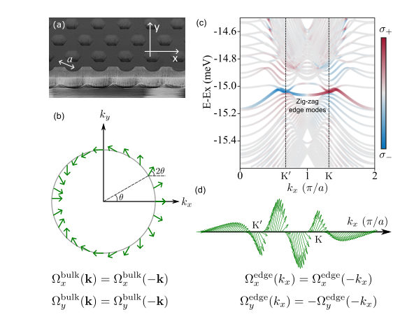
<figcaption class="paper-figure-caption"><b>Fig 1.</b> FIG. 1. Spin-momentum locking of zigzag edges states in a honeycomb lattice. Scanning electron microscopy (SEM) image of a zigzag edge in a honeycomb polariton lat- tice. The unit-cell size, a, is indicated by a double-headed arrow. The red circle marks the size and position of the exci- tation laser spot. The x −y coordinate axes are shown in the upper-right corner of the panel. (b) Simulation of the pro- jected band structure for a unit cell containing a zigzag edge, the bands encode the circular polarization in a false color scale, showing that the bulk modes remain linearly polarized, while the left- and right-propagating zigzag edge modes ex- hibit opposite spin polarization. The...</figcaption>
</figure>
<figure class="paper-figure-card">

<figcaption class="paper-figure-caption"><b>Fig 2.</b> FIG. 2. Experimental observation of SML in a ZES of a normal honeycomb lattice: linear regime. (a)/(b) PL intensity map of the dispersion relation of the honey- comb lattice measured in the bulk/along the zigzag edge. The dashed line indicates the energy of the Dirac points. The in- set schematically indicates the momentum-space cut across the Brillouin zone. (c) S3 map of the dispersion relation along the zigzag edge under horizontally polarized nonres- onant excitation, showing opposite circular polarization for counter-propagating ZES at K and K′. (d,e) S3 map of the energy- and real space-resolved emission measured un- der right- and left-circularly polarized excitation, respectively,...</figcaption>
</figure>
<figure class="paper-figure-card">

<figcaption class="paper-figure-caption"><b>Fig 3.</b> FIG. 3. Experimental observation of SML in ZES of a stretched honeycomb lattice: linear regime. (a) PL intensity map of the dispersion relation of the lattice in the bulk: a gap emerges in the Dirac points. (b) SEM image of the zigzag edge. (c) Dispersion relation measured along the zigzag edge. (d) Corresponding S3 map of the dispersion re- lation along the zigzag edge under horizontally polarized non- resonant excitation. The SML directionality is reversed with respect to the normal honeycomb lattice. The experimental figures have been acquired in the linear regime (P=0.08 mW), with an laser spot matching the pillar diameter as indicated in panel (b).</figcaption>
</figure>
<figure class="paper-figure-card">
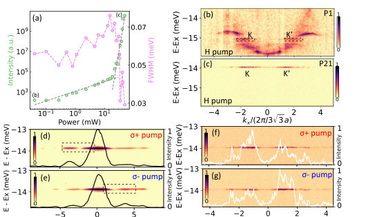
<figcaption class="paper-figure-caption"><b>Fig 4.</b> FIG. 4. SML lasing from ZES in a stretched honey- comb lattice. (a) Power-dependent emission intensity (green points) showing the nonlinear threshold behavior (Pth = 21.5 mW, with an elliptical laser spot covering six pillars along the edge) and line narrowing (pink points) associated with polariton lasing in the edge-state modes. (b,c) PL inten- sity map of the dispersion relation along the ZES for pump powers P=0.005Pth/1.95Pth, respectively. (d,e) Spatially and energy-resolved PL intensity map of the ZES under σ±-circularly polarized excitation, respectively, in the lasing regime (P=1.95Pth). The dashed boxes highlight the prop- agating direction of the edge-state lasing emission under σ±</figcaption>
</figure>
</div>

<p><strong>Summary.</strong> The paper reports the experimental observation of spin-momentum locking (SML) in polariton edge states within honeycomb lattices. By exploiting the inherent spin-orbit coupling from cavity geometry, they demonstrate that counter-propagating edge modes carry opposite circular polarizations. This effect is leveraged to achieve all-optical control over light directionality via spin-selective lasing.</p>
<p><strong>Why it may be interesting.</strong> This work provides an optical analogue for realizing robust chiral transport phenomena, which is highly relevant to quantum optics and condensed matter physics concerning topological edge states and spin-orbit coupling effects in artificial systems.</p>
<details>
<summary>Detailed structure</summary>
<p><strong>Main problem.</strong> The research aims to demonstrate spin-momentum locking (SML) of polariton edge states and achieve ultrafast, all-optical control over their directional propagation without external magnetic fields.</p>
<p><strong>Main result.</strong> SML is confirmed in the zigzag edge states of honeycomb exciton-polariton lattices via polarization measurements. Furthermore, selective lasing using spin-polarized injection enables switching the direction of light flow by changing the pump helicity.</p>
<p><strong>Method.</strong> The study combines experimental characterization using micro-photoluminescence with full Stokes polarimetry and theoretical modeling based on effective Hamiltonian descriptions for photonic lattices.</p>
<p><strong>Model / system.</strong> The system is an exciton-polariton honeycomb lattice realized in GaAs-based semiconductor microcavities. The physics is governed by an effective spin-orbit coupling arising from TE/TM splitting, which dictates the polarization of edge states.</p>
<p><strong>Key observables.</strong> Circular polarization ($S_3$), degree of elliptical polarization, and directional emission observed via $\sigma^+$ vs $\sigma^-$ pumping in both linear and gapped lattice geometries.</p>
<p><strong>Important parameters / regimes.</strong> The TE-TM coupling strength ($\Omega_{TE-TM}$), the complex wavevector associated with evanescent fields ($\lambda_y$), and the lasing threshold power ($P_{th}$).</p>
<p><strong>Assumptions / limitations.</strong> SML is shown to be an intrinsic property arising solely from the exponentially localized nature of edge states, independent of external magnetic fields.</p>
<p><strong>Figures summary.</strong> Figures illustrate SEM images of zigzag edges, simulated band structures showing opposite spin polarization for counter-propagating modes, and experimental maps demonstrating directional switching of emission based on pump helicity above lasing threshold.</p>
<p><strong>Paper structure.</strong> The paper develops the argument by first establishing the theoretical origin of SML from TE-TM splitting in edge states. It then presents experimental evidence using polarimetry to confirm this locking in both normal and stretched honeycomb lattices, culminating in a demonstration of spin-controlled directional lasing.</p>
</details>
<details>
<summary>Abstract</summary>
<p>Transverse-electric/Transverse-magnetic splitting in dielectric-mirror microcavities introduces an effective spin-orbit coupling for photons. While the bulk states remain linearly polarized, for exponentially localized edge states in a photonic lattice, this coupling induces elliptical polarization whose handedness is locked to the propagation direction, analogous to the transverse spin of evanescent electromagnetic waves. We reveal spin-momentum locking through Stokes polarimetry of zigzag edge states in a honeycomb exciton-polariton lattice. The effect persists in a stretched honeycomb supporting a photonic bandgap, where spin-polarized carrier injection enables selective lasing of either chiral edge states. Our results provide a route toward ultrafast spin-controlled unidirectional propagation in polariton systems without external magnetic fields.</p>
</details>
<p><sub><a href="#top">↑ back to top</a></sub></p>

<p><a id="paper-2607.04724"></a></p>
<h3 id="tunable-nonlinear-landscapes-in-graphene-nanoelectromechanical-systems"><a href="http://arxiv.org/abs/2607.04724v1">Tunable Nonlinear Landscapes in Graphene Nanoelectromechanical Systems</a></h3>
<p><strong>Authors:</strong> Ateesh K. Rathi, Rajan Singh, Javed A. Mondal, Arnab Sarkar, Ryan J. T. Nicholl, Kirill I. Bolotin, Saikat Ghosh<br>
<strong>Type:</strong> experiment · <strong>Category:</strong> other · <strong>PDF:</strong> <a href="https://arxiv.org/pdf/2607.04724v1">https://arxiv.org/pdf/2607.04724v1</a><br>
<strong>Analysis basis:</strong> full PDF text, analyzed in chunks
<strong>Topic relevance:</strong> 🔥 <code>analog quantum simulation</code> <strong>4/5</strong> · <code>driven-dissipative phase transition</code> <strong>3/5</strong> · <code>methods for driven-dissipative</code> <strong>3/5</strong> · <code>non-equilibrium dynamics</code> <strong>3/5</strong> · <code>interference shaping light</code> <strong>2/5</strong> · <code>non-equilibrium universality</code> <strong>2/5</strong> · <code>quantum optics experiment</code> <strong>2/5</strong> · <code>Frenkel-Kontorova</code> <strong>1/5</strong> · <code>Keldysh / 2PI / non-Gaussian methods</code> <strong>1/5</strong> · <code>correlated / nonlocal dissipation</code> <strong>1/5</strong> · <code>entanglement &amp; information structure</code> <strong>1/5</strong></p>
<div class="figure-strip-hint">↔ Scroll figures horizontally</div>
<div class="paper-figures-scroll">
<figure class="paper-figure-card">

<figcaption class="paper-figure-caption"><b>Fig 1.</b> Figure 1. Device, effective potential, and gate-tunable 1:2 internal resonance. (A)(a) Scanning electron micrograph of the device. (b) Capacitive geometry: an AC voltage Vac drives the membrane and a DC gate voltage Vdc sets the static tension. (B) Effective potential V (X) of the fundamental mode, showing the competing quadratic and cubic nonlinear terms. (C) Dispersion of the mechanical resonances versus Vdc. (D) Amplitude response of the fundamental mode versus Vdc at fixed Vac = 6.0 V.</figcaption>
</figure>
<figure class="paper-figure-card">

<figcaption class="paper-figure-caption"><b>Fig 2.</b> Figure 2. Integer high-harmonic generation and amplitude scaling. (A) Fundamental-mode spectrum with increasing drive amplitude at Vdc = 172 V; the spectral dip deepens as the nonlinear mode coupling strengthens. (B) Spectrum at fixed drive amplitude, showing the mode splitting from internal resonance. The black vertical line marks the drive frequency used in the following measurements. (C) Broadband spectrum under single-tone drive, showing integer harmonics up to fourth order (nωd, n = 1–4). Inset: onset threshold of each harmonic versus drive amplitude. (D) Amplitudes of the second, third, and fourth harmonics versus drive voltage, showing three regimes: (i) integer-harmonic generation...</figcaption>
</figure>
<figure class="paper-figure-card">
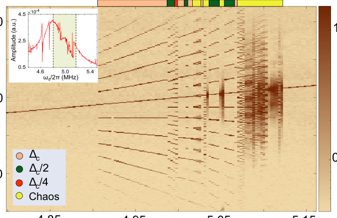
<figcaption class="paper-figure-caption"><b>Fig 3.</b> Figure 3. From integer harmonics through frequency combs to chaos. (A) Spectral map versus drive amplitude at fixed ωd/2π = 4.8338 MHz and Vdc = 158 V. Three regimes are marked: (i) integer-harmonic generation (Vac ≤6.8 V); (ii) dense comb (6.8 ≤Vac ≤8.8 V); (iii) reverse period-doubled comb with doubled spacing (8.8 ≤Vac ≤9.4 V). (B) Spectral map versus drive frequency at fixed drive amplitude, showing the evolution from a single peak to a comb, then successive period-doubling steps (∆c →∆c/2 →∆c/4) and finally chaos. Inset: fundamental-mode spectrum with the 1:2 mode splitting; the shaded band marks the swept frequency range.</figcaption>
</figure>
</div>

<p><strong>Summary.</strong> The authors report achieving tunable nonlinear dynamics in graphene NEMS by exploiting internal resonances induced by a gate voltage. They demonstrate the device's ability to generate controlled frequency combs and undergo predictable period-doubling cascades. This shows that a single, gated solid-state device can act as multiple functional components (multiplier, comb source) on demand.</p>
<p><strong>Why it may be interesting.</strong> This work provides a solid-state platform to study fundamental nonlinear dynamics (like those seen in classical optics or Josephson junctions) using mechanical resonators, offering an accessible quantum/classical analog system for studying complex bifurcations and energy transfer mechanisms.</p>
<details>
<summary>Detailed structure</summary>
<p><strong>Main problem.</strong> The research demonstrates tunable nonlinear dynamics in a solid-state nanomechanical system, specifically observing high-harmonic generation (HHG) and frequency comb formation.</p>
<p><strong>Main result.</strong> By tuning the gate voltage to induce an internal resonance, the graphene device can function as a switchable source for integer harmonics, broadband combs, or chaotic signals via controlled period-doubling transitions.</p>
<p><strong>Method.</strong> The study combines experimental measurements using optical interferometry with theoretical modeling based on coupled nonlinear oscillator equations and harmonic balance techniques.</p>
<p><strong>Model / system.</strong> The physical platform is a suspended monolayer graphene drumhead NEMS resonator. The dynamics are governed by an effective potential incorporating quadratic ($\zeta$) and cubic ($eta$) nonlinear terms, which are tunable via an applied gate voltage ($V_{dc}$).</p>
<p><strong>Key observables.</strong> Integer harmonics ($n\omega_d$), dense frequency combs, period-doubling cascades, and the measurable nonlinear coefficients $\zeta$ and $eta$.</p>
<p><strong>Important parameters / regimes.</strong> Gate voltage ($V_{dc}$) used to tune nonlinearity; achieving 1:2 internal resonance ($\omega_2 \approx 2\omega_0$) is critical for strong coupling.</p>
<p><strong>Assumptions / limitations.</strong> The analysis relies on modeling the system using coupled equations of motion and employing techniques like harmonic balance or steady-state amplitude fitting.</p>
<p><strong>Figures summary.</strong> Figures illustrate spectral maps showing transitions from single peaks to combs, followed by period doubling. Resonance dispersion plots show how the fundamental and higher modes couple as a function of gate voltage.</p>
<p><strong>Paper structure.</strong> The paper establishes the physical setup and model potential, then details experimental measurements across varying drive amplitudes and frequencies. The core results demonstrate the sequence: IHG $
ightarrow$ Comb Formation $
ightarrow$ Reverse Period-Doubling, confirming control over nonlinear regimes.</p>
</details>
<details>
<summary>Abstract</summary>
<p>Nonlinear nanomechanical resonators give convenient solid-state access to classical analogs of extreme nonlinear optics and to phononic signal processing. Here we report integer high-harmonic generation and phononic frequency combs in a suspended monolayer graphene drum. A gate voltage breaks the out-of-plane symmetry of the membrane and tunes its fundamental flexural mode onto a 1:2 internal resonance with a higher mode at twice the frequency, where the quadratic coupling between the two modes becomes large. A single drive tone then generates phase-locked integer harmonics in sequence, and at larger drive these fill in to a dense frequency comb. Raising the drive further, we find a reverse period-doubling transition: the comb spacing doubles, the line density halves, and energy flows back into the even-order comb lines. The measured spectra yield the quadratic ($ζ$) and cubic ($β$) nonlinear coefficients of the membrane. These results show how the tunable nonlinear landscape of graphene supports distinct dynamical regimes on demand, allowing a single gated device to act in turn as a frequency multiplier, a broadband comb source, and a chaotic generator.</p>
</details>
<p><sub><a href="#top">↑ back to top</a></sub></p>

<p><a id="paper-2607.05066"></a></p>
<h3 id="finite-frequency-magnetic-common-baths-in-ferromagnetic-planar-cavities"><a href="http://arxiv.org/abs/2607.05066v1">Finite-frequency magnetic common baths in ferromagnetic planar cavities</a></h3>
<p><strong>Authors:</strong> O. J. Kwon<br>
<strong>Type:</strong> theory · <strong>Category:</strong> other · <strong>PDF:</strong> <a href="https://arxiv.org/pdf/2607.05066v1">https://arxiv.org/pdf/2607.05066v1</a><br>
<strong>Analysis basis:</strong> full PDF text, analyzed in chunks
<strong>Topic relevance:</strong> 🔥 <code>spintronics-quantum-optics interface</code> <strong>4/5</strong> · <code>correlated / nonlocal dissipation</code> <strong>3/5</strong> · <code>exotic spin models in light-matter</code> <strong>3/5</strong> · <code>Keldysh / 2PI / non-Gaussian methods</code> <strong>2/5</strong> · <code>Tavis-Cummings &amp; cavity-many-emitter</code> <strong>2/5</strong> · <code>driven-dissipative phase transition</code> <strong>2/5</strong> · <code>methods for driven-dissipative</code> <strong>2/5</strong> · <code>Kondo &amp; dissipative impurity</code> <strong>1/5</strong> · <code>analog quantum simulation</code> <strong>1/5</strong> · <code>correlated cavity matter</code> <strong>1/5</strong> · <code>non-equilibrium dynamics</code> <strong>1/5</strong></p>
<div class="figure-strip-hint">↔ Scroll figures horizontally</div>
<div class="paper-figures-scroll">
<figure class="paper-figure-card">
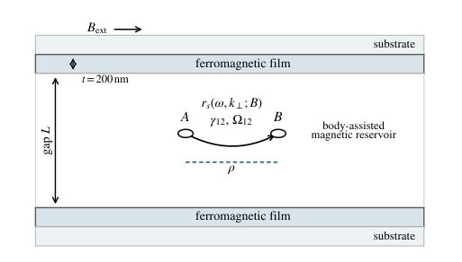
<figcaption class="paper-figure-caption"><b>Fig 1.</b> FIG. 1. Geometry and finite-frequency common-bath mech- anism. Two probes in a vacuum gap couple to the retarded scattering magnetic Green tensor. The benchmark figures use a finite ferromagnetic film thickness t = 200 nm, a non- magnetic conducting substrate, and the zz transition-moment projection.</figcaption>
</figure>
<figure class="paper-figure-card">
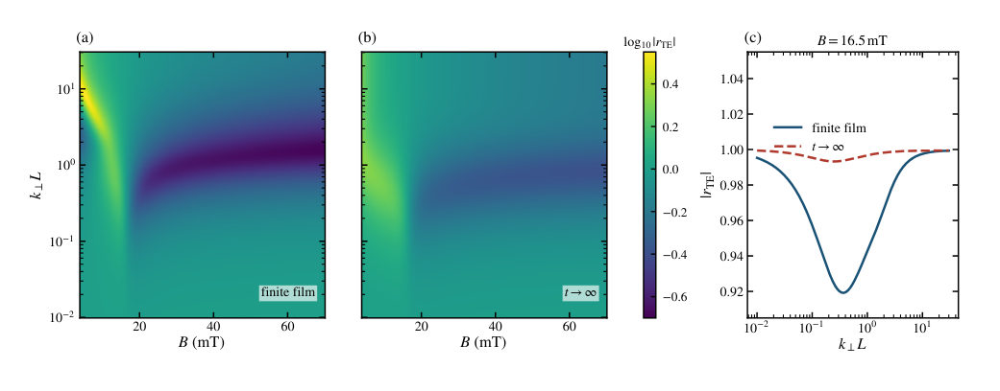
<figcaption class="paper-figure-caption"><b>Fig 2.</b> FIG. 2. Finite-thickness scalar TE benchmark. (a) Finite-film TE slab amplitude for t = 200 nm, plotted as log10 |rTE| versus B and k⊥L. (b) The corresponding t →∞half-space reference. (c) A cut at B = 16.5 mT, where finite thickness reduces |rTE| relative to the half-space reference mainly at intermediate k⊥L. At large k⊥L, the finite-film and half-space curves approach each other. The plotted quantity is the reciprocal diagonal TE benchmark channel used in the numerical Green-tensor integral.</figcaption>
</figure>
<figure class="paper-figure-card">
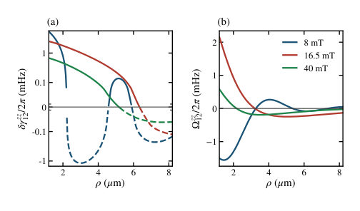
<figcaption class="paper-figure-caption"><b>Fig 3.</b> FIG. 3. Single-spin finite-frequency kernels for the zz pro- jection of the finite-thickness scalar cavity integral. The zz projection is the component benchmark used to match the static TE normalization of Ref. [1]. Panel (a) shows the signed off-diagonal scattering kernel δγ(zz) 12 /2π on a symmetric loga- rithmic scale; solid and dashed segments denote positive and negative values. Panel (b) shows the coherent exchange shift Ωzz 12/2π. Within the cavity-scattering sector, the sign in panel (a) fixes whether the symmetric or antisymmetric branch is narrowed relative to the local background.</figcaption>
</figure>
<figure class="paper-figure-card">
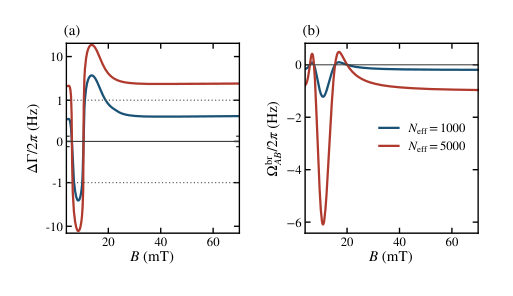
<figcaption class="paper-figure-caption"><b>Fig 4.</b> FIG. 4. Ideal uniform bright-mode scale estimate at ρ = 3 µm for two effective participation numbers. Panel (a) shows the linewidth splitting (Γ+ −Γ−)/2π = 2γbr AB/2π, with dotted horizontal lines marking the ±1 Hz reference level. Panel (b) shows the bright-mode coherent shift Ωbr AB/2π for the same participation numbers.</figcaption>
</figure>
<figure class="paper-figure-card">
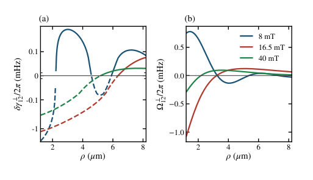
<figcaption class="paper-figure-caption"><b>Fig 5.</b> FIG. 6. Component-normalized transverse-average bench- mark for the finite-thickness scalar cavity integral. Panel (a) shows the signed off-diagonal scattering kernel δγ(⊥) 12 /2π for the projection m2 c(Gsc BB,xx + Gsc BB,yy)/2 on a symmetric loga- rithmic scale; dashed segments denote negative values. Panel (b) shows Ω⊥ 12/2π for the same projection. The magnitudes are comparable to the zz benchmark, while the sign is re- versed over the plotted range because the tensor is projected onto the in-plane spin-flip subspace.</figcaption>
</figure>
</div>

<p><strong>Summary.</strong> This paper develops a theory to calculate the finite-frequency magnetic common bath experienced by two spin probes inside a ferromagnetic cavity. By utilizing the retarded magnetic Green tensor, the authors derive key coupling kernels ($\gamma_{12}, \Omega_{12}$) that quantify dynamic interactions. The results provide measurable predictions for linewidth splitting and Lamb shifts in solid-state quantum systems.</p>
<p><strong>Why it may be interesting.</strong> This work provides a rigorous theoretical framework for quantifying dynamic coupling mechanisms between quantum emitters mediated by structured magnetic environments, extending static results into the frequency domain relevant for modern quantum sensing.</p>
<details>
<summary>Detailed structure</summary>
<p><strong>Main problem.</strong> The primary goal is formulating and evaluating the finite-frequency magnetic common bath experienced by two spin probes situated within a ferromagnetic planar cavity.</p>
<p><strong>Main result.</strong> The work successfully derives finite-frequency counterparts for static coupling shifts, yielding measurable off-diagonal linewidth splitting and collective Lamb shift kernels ($\gamma_{12}, \Omega_{12}$).</p>
<p><strong>Method.</strong> The analysis employs macroscopic Quantum Electrodynamics (QED) by calculating the retarded magnetic Green tensor ($\mathbf{G}_{	ext{BB}}$) projected onto a scalar TE channel.</p>
<p><strong>Model / system.</strong> The system consists of two spin probes coupled via a common bath mediated by a finite-thickness ferromagnetic film deposited on a nonmagnetic substrate. The coupling is modeled using the transverse diagonal Polder permeability ($\mu_{\perp}(\omega, \mathbf{B})$).</p>
<p><strong>Key observables.</strong> Common-bath kernels ($\gamma_{12}$ and $\Omega_{12}$), linewidth splitting, and collective Lamb shift.</p>
<p><strong>Important parameters / regimes.</strong> GHz probe transition frequencies, millikelvin temperatures, film thickness ($t=200\,\mathrm{nm}$), and cavity separation ($
ho=3\,\mu\mathrm{m}$).</p>
<p><strong>Assumptions / limitations.</strong> The model simplifies the full planar response by using a scalar TE channel projection, neglecting TE–TM conversion and nonreciprocal off-diagonal Polder responses.</p>
<p><strong>Figures summary.</strong> Figures illustrate the geometry of two probes coupled via a ferromagnetic film. Comparisons are made between finite-thickness cavity integrals (e.g., $\delta\gamma_{\perp}^{12}/2\pi$) and static benchmarks derived from image series calculations.</p>
<p><strong>Paper structure.</strong> The paper develops the theory by first defining the common bath kernels using the magnetic Green tensor, then deriving the necessary reflection coefficients for a finite slab structure, and finally applying these to calculate observable quantities like linewidth splitting in specific physical regimes (e.g., near-field).</p>
</details>
<details>
<summary>Abstract</summary>
<p>We formulate the finite-frequency magnetic common bath of two spin probes in a ferromagnetic planar cavity. The probes couple to the retarded magnetic Green tensor of the cavity, whose imaginary and real parts determine the collective decay kernel \(γ_{12}\) and the Lamb-shift kernel \(Ω_{12}\). We evaluate these kernels for a finite-thickness scalar TE channel formed by a ferromagnetic film on a nonmagnetic conducting substrate, using the transverse diagonal Polder permeability \(μ_\perp(ω,B)\) as the magnetic input. The normalization is fixed by the free-space magnetic-dipole decay rate. In the \(ω\to0\) limit, the constant-reflection benchmark reproduces the static image-series reference, while the finite slab retains the corresponding static TE reflection amplitude. For a \(t=200\,\mathrm{nm}\) film described by a representative Ni-like parameter set in a micron-scale mid-gap cavity, the GHz probe transition samples the positive-frequency response of the body-assisted magnetic reservoir at millikelvin temperature. On resonance, the off-diagonal linewidth splitting reaches about two thirds of the single-spin scattering linewidth at \(ρ=3\,μ\mathrm m\). The resulting linewidth splitting and collective Lamb shift provide finite-frequency counterparts of the static TE coupling-frequency shift.</p>
</details>
<p><sub><a href="#top">↑ back to top</a></sub></p>

<p><a id="paper-2607.03837"></a></p>
<h3 id="on-the-nonlinear-sensitivity-of-phononic-frequency-combs-to-physical-perturbations"><a href="http://arxiv.org/abs/2607.03837v1">On the Nonlinear Sensitivity of Phononic Frequency Combs to Physical Perturbations</a></h3>
<p><strong>Authors:</strong> Madhurendra Mishra, Zhen Qi, Adarsh Ganesan<br>
<strong>Type:</strong> theory · <strong>Category:</strong> other · <strong>PDF:</strong> <a href="https://arxiv.org/pdf/2607.03837v1">https://arxiv.org/pdf/2607.03837v1</a><br>
<strong>Analysis basis:</strong> full PDF text, analyzed in chunks
<strong>Topic relevance:</strong> 🔥 <code>driven-dissipative phase transition</code> <strong>4/5</strong> · <code>correlated cavity matter</code> <strong>3/5</strong> · <code>methods for driven-dissipative</code> <strong>3/5</strong> · <code>non-equilibrium universality</code> <strong>3/5</strong> · <code>analog quantum simulation</code> <strong>2/5</strong> · <code>correlated / nonlocal dissipation</code> <strong>2/5</strong> · <code>non-equilibrium dynamics</code> <strong>2/5</strong> · <code>Frenkel-Kontorova</code> <strong>1/5</strong> · <code>Keldysh / 2PI / non-Gaussian methods</code> <strong>1/5</strong> · <code>Tavis-Cummings &amp; cavity-many-emitter</code> <strong>1/5</strong></p>
<div class="figure-strip-hint">↔ Scroll figures horizontally</div>
<div class="paper-figures-scroll">
<figure class="paper-figure-card">
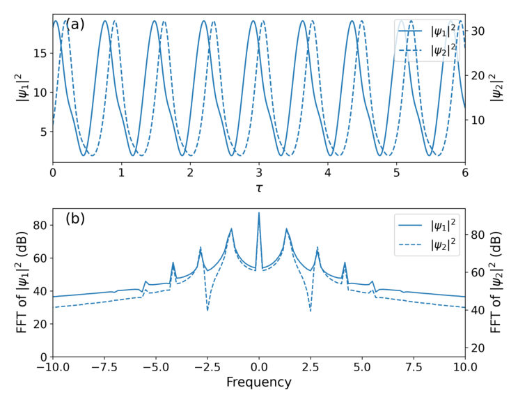
<figcaption class="paper-figure-caption"><b>Fig 1.</b> Fig. 1: (a) Time-domain evolution of the coupled mode intensities |ψ1|2 and |ψ2|2 plotted together; (b) Corresponding Fourier spectra (FFT) of the same quantities. Here, τ and frequency are unitless normalized variables. The simulation parameters are ∆1 = 5, ∆2 = −6.5, γ21 = 1, and f = 24 with initial conditions are ψ1(0) = 5 and ψ2(0) = 3.</figcaption>
</figure>
<figure class="paper-figure-card">
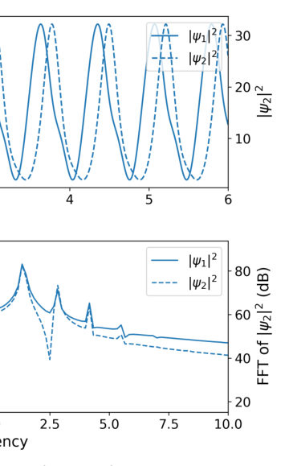
<figcaption class="paper-figure-caption"><b>Fig 2.</b> Figure 8 maps the absolute sensitivity of key intensity mea- sures to infinitesimal variations in ∆1 across the (∆1, f) plane, complementing the amplitude maps of Fig. 5 by exposing where the system is most susceptible to parameter fluctuations. For both modes, the sensitivity is sharply localized along a nar- row band near f ∼16–21, coinciding with the oscillation on- set boundary identified earlier. For ψ1, panels (a) and (b) show that the mean intensity develops high-sensitivity patches at f ≳25, while the peak-to-peak amplitude is most responsive precisely along the transition boundary, where small changes in ∆1 can trigger large amplitude variations. The extrema in panels (c) and (d)...</figcaption>
</figure>
<figure class="paper-figure-card">
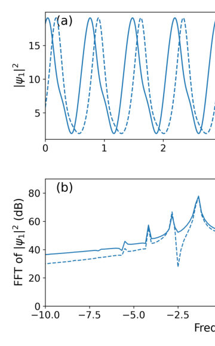
<figcaption class="paper-figure-caption"><b>Fig 3.</b> Figure 7 maps the modal intensity statistics across the (γ21, f) parameter plane. For the primary mode ψ1, panels (a)-(d) show that the mean intensity, peak-to-peak amplitude, and maximum all increase monotonically with f, with a clear additional enhancement from coupling strength, particularly for γ21 ≳1. Panel (c) stands out: the minimum intensity remains near zero for f ≲15-18, with a well-defined boundary above which it rises abruptly, marking the onset of fully sustained limit-cycle dynamics. This threshold shifts only weakly with γ21, indicating that while coupling enhances</figcaption>
</figure>
<figure class="paper-figure-card">
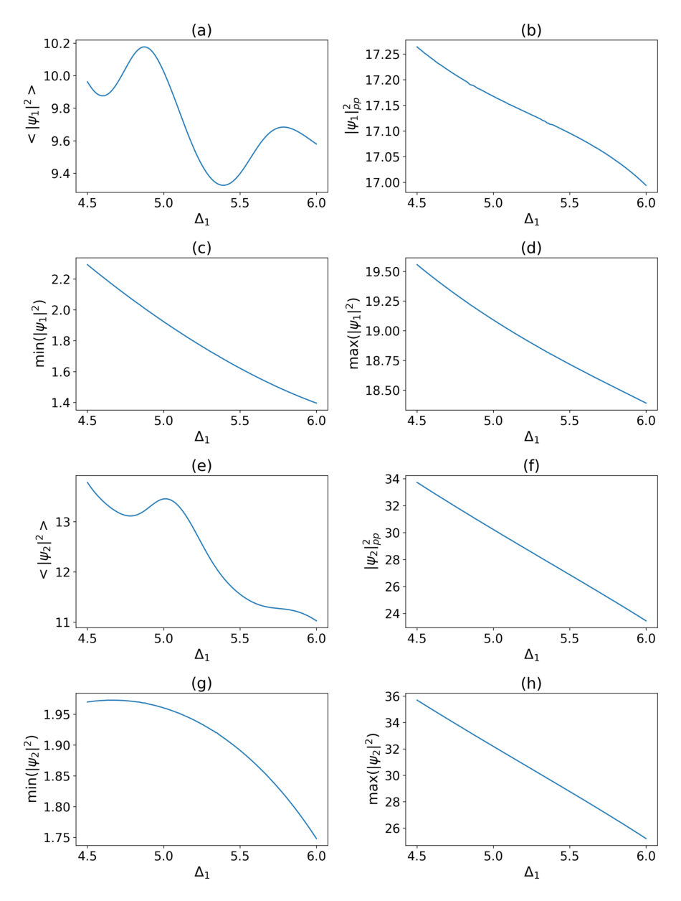
<figcaption class="paper-figure-caption"><b>Fig 4.</b> Fig. 2: Evolution of modal intensities of ψ1 and ψ2 as a function of detuning ∆1, with ∆2 = −6.5, γ21 = 1, and driving amplitude f = 24 held fixed. Panels (a)-(d) correspond to mode ψ1, showing the mean intensity ⟨|ψ1|2⟩, peak-to-peak intensity |ψ1|2 pp, minimum intensity min(|ψ1|2), and maximum intensity max(|ψ1|2), respectively. Panels (e)-(h) show the corresponding quantities for mode ψ2.</figcaption>
</figure>
<figure class="paper-figure-card">
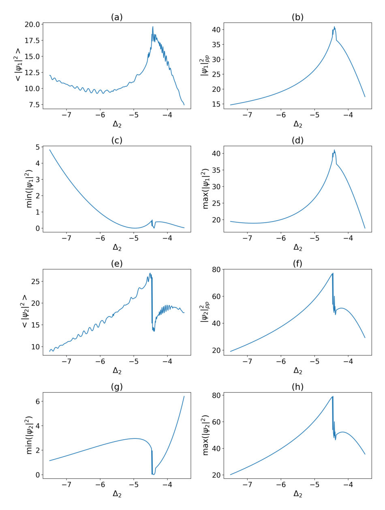
<figcaption class="paper-figure-caption"><b>Fig 5.</b> Fig. 3: Evolution of modal intensities of ψ1 and ψ2 as a function of detuning ∆2, with ∆1 = 5, γ21 = 1, and driving amplitude f = 24 held fixed. Panels (a)-(d) correspond to mode ψ1, showing the mean intensity ⟨|ψ1|2⟩, peak-to-peak intensity |ψ1|2 pp, minimum intensity min(|ψ1|2), and maximum intensity max(|ψ1|2), respectively. Panels (e)-(h) show the corresponding quantities for mode ψ2.</figcaption>
</figure>
</div>

<p><strong>Summary.</strong> This paper analyzes the nonlinear sensitivity of phononic frequency combs using a reduced two-mode resonance model. By mapping how observables like amplitude and frequency change with detuning, drive strength, and damping, the authors reveal that sensitivity is highly structured, governed by distinct physical mechanisms like parametric resonance thresholds. This provides a roadmap for engineering these systems for advanced sensing applications.</p>
<p><strong>Why it may be interesting.</strong> This work provides a detailed map of nonlinear control parameters for an artificial quantum/classical system (PFCs), offering blueprints for designing sensing platforms where specific physical changes induce predictable, measurable shifts in spectral features.</p>
<details>
<summary>Detailed structure</summary>
<p><strong>Main problem.</strong> The study investigates how the observable properties (amplitude and frequency) of phononic frequency combs respond to variations in physical parameters, quantifying their nonlinear sensitivity.</p>
<p><strong>Main result.</strong> Sensitivity is highly non-uniform: primary detuning causes smooth shifts, secondary detuning creates sharp transitions near resonance manifolds, and peak sensitivity concentrates near the activation threshold. This points to a common origin in autoparametric resonance and saturation.</p>
<p><strong>Method.</strong> The authors employed numerical investigation of a reduced two-mode autoparametric resonance model derived from underlying mechanical equations.</p>
<p><strong>Model / system.</strong> The system is Phononic Frequency Combs (PFCs), modeled by coupled, first-order ordinary differential equations describing the complex envelopes ($\psi_1$ and $\psi_2$) of primary and secondary modes. The dynamics are governed by detunings, drive amplitude, and relative damping.</p>
<p><strong>Key observables.</strong> Amplitude ($|\psi_i|^2$), frequency ($\omega_{\psi_i}$), mean intensity, peak-to-peak amplitude, and differential sensitivity across parameter space.</p>
<p><strong>Important parameters / regimes.</strong> Primary detuning ($\Delta_1$), secondary detuning ($\Delta_2$), drive amplitude ($f$), and relative damping ($\gamma_{21}$).</p>
<p><strong>Assumptions / limitations.</strong> The model assumes slow variation of complex envelopes relative to carrier lines, allowing reduction from second-order to first-order ODEs.</p>
<p><strong>Figures summary.</strong> Figures map sensitivity across parameter planes (e.g., $\Delta_2$ vs $f$) showing sharp resonance ridges and threshold boundaries; frequency plots show abrupt jumps near critical detuning values.</p>
<p><strong>Paper structure.</strong> The paper systematically analyzes the response to each perturbation ($\Delta_1$, $\Delta_2$, $\gamma_{21}$, $f$), first examining steady-state amplitudes, then mapping the differential sensitivity of both amplitude and frequency across various parameter combinations.</p>
</details>
<details>
<summary>Abstract</summary>
<p>Phononic frequency combs offer a rich platform for nonlinear sensing, yet how their observable properties respond to changes in physical parameters remains poorly understood. Using a reduced two-mode autoparametric resonance model, we investigate how primary and secondary detuning, drive amplitude, and relative damping jointly shape amplitude and frequency sensitivity across the nonlinear parameter space. We find that sensitivity is far from uniform: primary detuning shifts the comb response smoothly, secondary detuning produces sharply localized transitions near resonance manifolds, and drive amplitude concentrates peak sensitivity close to the activation threshold rather than deep within the comb state. The relative damping redistributes energy continuously between modes without introducing discontinuities. The nonlinear sensitivity of amplitude and frequency observables across all parameters points to a common physical origin in autoparametric resonance, nonlinear saturation, and coupling-induced synchronization, offering a coherent basis for designing nonlinear sensing platforms with deliberate, parameter-aware sensitivity engineering.</p>
</details>
<p><sub><a href="#top">↑ back to top</a></sub></p>

<p><a id="paper-2607.04408"></a></p>
<h3 id="theory-of-spinful-relativistic-superfluids"><a href="http://arxiv.org/abs/2607.04408v1">Theory of Spinful Relativistic Superfluids</a></h3>
<p><strong>Authors:</strong> Dam Thanh Son<br>
<strong>Type:</strong> theory · <strong>Category:</strong> other · <strong>PDF:</strong> <a href="https://arxiv.org/pdf/2607.04408v1">https://arxiv.org/pdf/2607.04408v1</a><br>
<strong>Analysis basis:</strong> full PDF text, analyzed in chunks
<strong>Topic relevance:</strong> 🔥 <code>Keldysh / 2PI / non-Gaussian methods</code> <strong>4/5</strong> · <code>methods for driven-dissipative</code> <strong>3/5</strong> · <code>non-equilibrium dynamics</code> <strong>3/5</strong> · <code>driven-dissipative phase transition</code> <strong>2/5</strong> · <code>non-equilibrium universality</code> <strong>2/5</strong> · <code>analog quantum simulation</code> <strong>1/5</strong> · <code>correlated / nonlocal dissipation</code> <strong>1/5</strong> · <code>entanglement &amp; information structure</code> <strong>1/5</strong> · <code>exotic spin models in light-matter</code> <strong>1/5</strong> · <code>spintronics-quantum-optics interface</code> <strong>1/5</strong></p>
<div class="figure-strip-hint">↔ Scroll figures horizontally</div>
<div class="paper-figures-scroll">
<figure class="paper-figure-card">

<figcaption class="paper-figure-caption"><b>Fig 1.</b> Low-resolution page preview, page 2</figcaption>
</figure>
<figure class="paper-figure-card">

<figcaption class="paper-figure-caption"><b>Fig 2.</b> Low-resolution page preview, page 3</figcaption>
</figure>
<figure class="paper-figure-card">
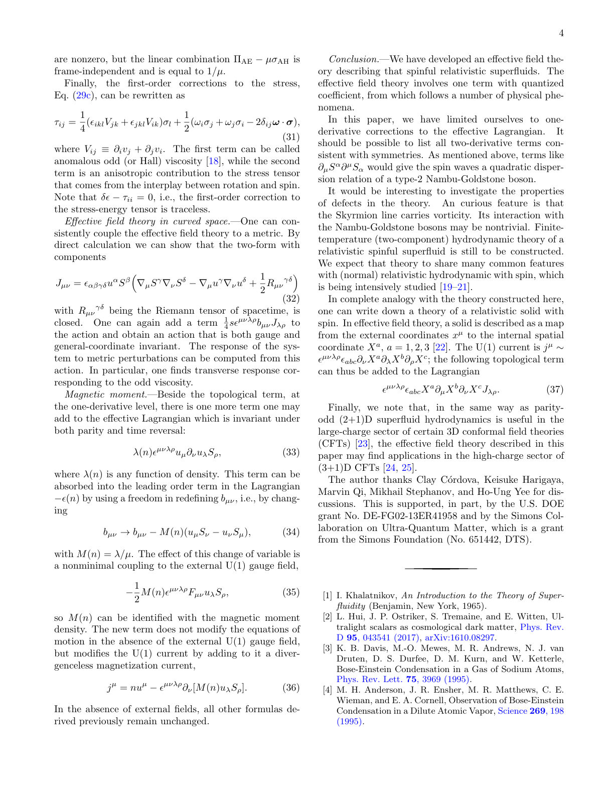
<figcaption class="paper-figure-caption"><b>Fig 3.</b> Low-resolution page preview, page 4</figcaption>
</figure>
<figure class="paper-figure-card">

<figcaption class="paper-figure-caption"><b>Fig 4.</b> Low-resolution page preview, page 5</figcaption>
</figure>
</div>

<p><strong>Summary.</strong> This work develops an effective field theory for relativistic superfluids carrying spin angular momentum. By incorporating topological terms into the action, the authors derive novel physical consequences such as modified transport relations and anomalous effects. It provides a rigorous framework for understanding how spin dynamics modify the macroscopic energy-momentum tensor of these exotic quantum fluids.</p>
<p><strong>Why it may be interesting.</strong> While focused on high-energy/condensed matter theory, the derivation of generalized conserved currents and anomalous response terms (like Hall viscosity) shares mathematical structure with open quantum systems dynamics where dissipation and non-equilibrium responses are key.</p>
<details>
<summary>Detailed structure</summary>
<p><strong>Main problem.</strong> The paper constructs an effective field theory description for relativistic superfluids that possess a non-zero angular momentum density (spinful superfluids). It aims to derive the resulting physical transport properties.</p>
<p><strong>Main result.</strong> The theory yields several novel effects, including the relativistic Mermin-Ho relation and anomalous transport phenomena like the anomalous Ettingshausen effect. The stress-energy tensor is shown to acquire one-derivative corrections due to spin dynamics.</p>
<p><strong>Method.</strong> The analysis uses an effective action approach involving topological terms derived from a two-form current $J$. Equations of motion are derived by varying this action with respect to gauge fields and spin components.</p>
<p><strong>Model / system.</strong> The model is a relativistic superfluid, applicable to systems like quark matter or superfluid Helium-3, characterized by Cooper pairs carrying angular momentum. The theory treats the dynamics using effective field theory techniques in curved spacetime.</p>
<p><strong>Key observables.</strong> Stress-energy tensor ($T^{\mu
u}$), spin current ($\Sigma^{\mu\alphaeta}$), anomalous Ettingshausen effect coefficient ($q_{AE}$), and magnetization current ($j^\mu$).</p>
<p><strong>Important parameters / regimes.</strong> The topological coefficient $s$ (assumed constant) and the low-energy expansion order (one-derivative corrections).</p>
<p><strong>Assumptions / limitations.</strong> The analysis is limited to one-derivative corrections in the effective Lagrangian, and it assumes a specific form for the superfluid condensate dynamics.</p>
<p><strong>Paper structure.</strong> The paper builds from the general construction of the effective action incorporating spin degrees of freedom, derives conservation laws for energy and momentum, analyzes the resulting stress-energy tensor corrections, and finally identifies specific anomalous transport effects.</p>
</details>
<details>
<summary>Abstract</summary>
<p>We construct an effective field theory description of relativistic superfluids with nonzero angular momentum density. At first order in the derivative expansion, the effective action contains a term with a quantized coefficient, which encodes the Berry phase for the angular momentum of the superfluid condensate. From this single term we derive a number of physical effects, including the relativistic Mermin-Ho relation, an anomalous Ettingshausen effect (exchangeable for an anomalous Hall effect), and an anomalous Hall viscosity.</p>
</details>
<p><sub><a href="#top">↑ back to top</a></sub></p>

<p><a id="paper-2607.03717"></a></p>
<h3 id="nonlinear-hall-effect-in-floquet-driven-monolayer-1tmath1320math-mosmath1321math"><a href="http://arxiv.org/abs/2607.03717v1">Nonlinear Hall effect in Floquet-driven monolayer 1T$'$-MoS$_2$</a></h3>
<p><strong>Authors:</strong> Muhammad Faisal, Muzamil Shah, Imtiaz Khan, Reza Asgari<br>
<strong>Type:</strong> theory · <strong>Category:</strong> other · <strong>PDF:</strong> <a href="https://arxiv.org/pdf/2607.03717v1">https://arxiv.org/pdf/2607.03717v1</a><br>
<strong>Analysis basis:</strong> full PDF text, analyzed in chunks
<strong>Topic relevance:</strong> 🔥 <code>non-equilibrium dynamics</code> <strong>4/5</strong> · <code>Keldysh / 2PI / non-Gaussian methods</code> <strong>3/5</strong> · <code>spintronics-quantum-optics interface</code> <strong>3/5</strong> · <code>driven-dissipative phase transition</code> <strong>2/5</strong> · <code>methods for driven-dissipative</code> <strong>2/5</strong> · <code>analog quantum simulation</code> <strong>1/5</strong> · <code>exotic spin models in light-matter</code> <strong>1/5</strong> · <code>interference shaping light</code> <strong>1/5</strong> · <code>non-equilibrium universality</code> <strong>1/5</strong></p>
<div class="figure-strip-hint">↔ Scroll figures horizontally</div>
<div class="paper-figures-scroll">
<figure class="paper-figure-card">

<figcaption class="paper-figure-caption"><b>Fig 1.</b> FIG. 1. Side-view schematic of monolayer 1T ′-MoS2, showing Mo atoms (green) and S atoms (magenta), illuminated by off- resonant circularly polarized light. The intrinsic tilt structure induces asymmetry of the electronic bands.</figcaption>
</figure>
<figure class="paper-figure-card">
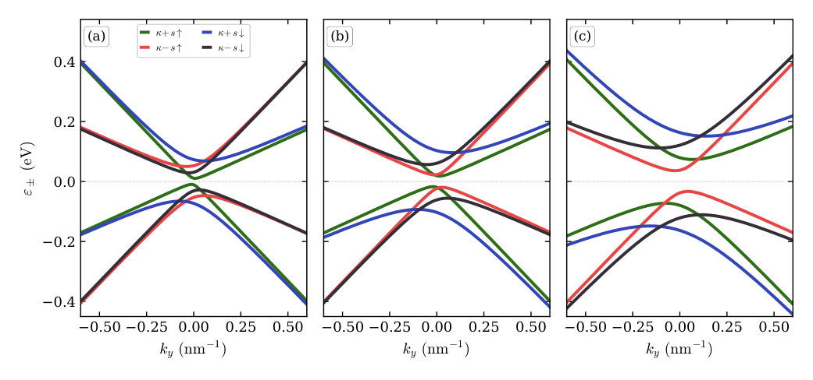
<figcaption class="paper-figure-caption"><b>Fig 2.</b> FIG. 2. Floquet quasienergy bands ε±(kx=0, ky) of monolayer 1T′-MoS2 for the four spin–valley sectors at three drive strengths: (a) quantum spin Hall (QSH) (with Ctot = 0) at ξ = 0.01, (b) spin-polarized quantum Hall insulator (S-QHI) (with Ctot = −1) at ξ = 0.04, and (c) photoinduced quantum Hall insulator (P-QHI) (with Ctot = −2) at ξ = 0.10. Green and blue are the κ=+ spin-up and spin-down; red and black are κ=−branches. The electric field and helicity are fixed at α = 0.5 and η = +1.</figcaption>
</figure>
<figure class="paper-figure-card">
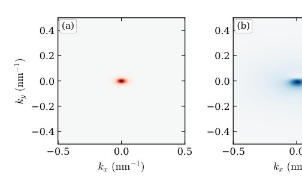
<figcaption class="paper-figure-caption"><b>Fig 3.</b> FIG. 3. Total occupied-band Berry curvature Ωtot −= P</figcaption>
</figure>
<figure class="paper-figure-card">
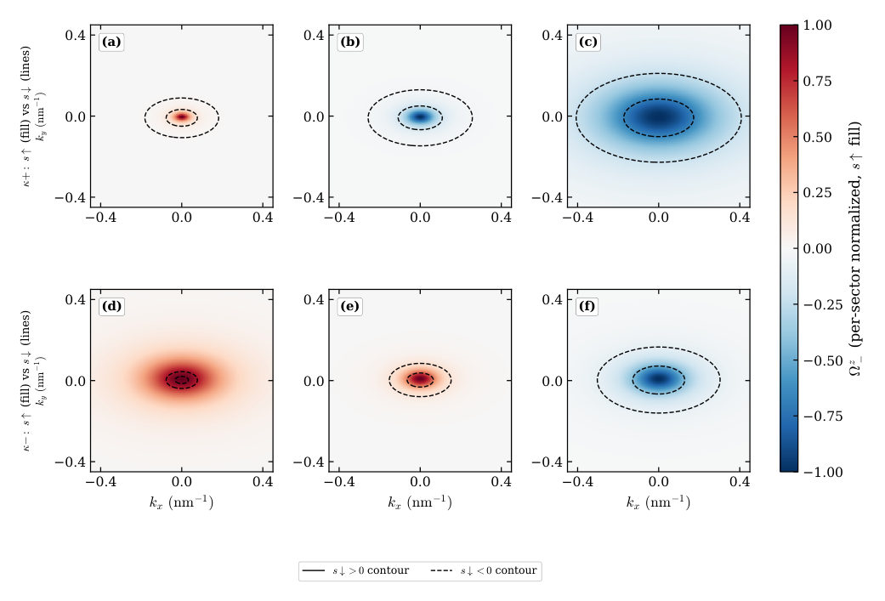
<figcaption class="paper-figure-caption"><b>Fig 4.</b> FIG. 4. Sector-resolved occupied-band Berry curvature Ωz −. Each row is one valley (top) κ+, (bottom) κ−and each column one drive strength (a,d) QSH (ξ = 0.01), (b,e) S-QHI (ξ = 0.04), (c,f) P-QHI (ξ = 0.10). Filled color shows s↑; black contours overlay s↓(solid: positive, dashed: negative), each normalized to its own peak. Other parameters are as in Fig. (2).</figcaption>
</figure>
<figure class="paper-figure-card">

<figcaption class="paper-figure-caption"><b>Fig 5.</b> FIG. 5. Berry-curvature-dipole density of monolayer 1T ′-MoS2 summed over sectors: (top) ∂kxΩtot and (bottom) ∂kyΩtot, for (a) ξ = 0.01, (b) ξ = 0.04, and (c) ξ = 0.10, each panel normalized to its own peak. ∂kxΩis odd in kx and integrates to zero (Dx = 0), while ∂kyΩintegrates to a finite Dy. Other parameters are as in Fig. (2).</figcaption>
</figure>
</div>

<p><strong>Summary.</strong> This work investigates the nonlinear Hall effect in Floquet-driven 1T'-MoS2 to characterize engineered topological phases. The key finding is that a sign reversal in the NHE conductivity provides an unambiguous signature of these transitions, distinguishing them from simple parameter tuning. This establishes the material as a viable platform for all-electrical detection of non-equilibrium topology.</p>
<p><strong>Why it may be interesting.</strong> The use of non-equilibrium optical driving to induce and probe topological phases is highly relevant for AMO physics, particularly concerning how external fields (like light) can engineer quantum states in solid-state systems.</p>
<details>
<summary>Detailed structure</summary>
<p><strong>Main problem.</strong> The study aims to establish a universal transport fingerprint for Floquet-engineered topology by investigating the nonlinear Hall effect (NHE) in driven 2D materials.</p>
<p><strong>Main result.</strong> A sign reversal in the NHE conductivity, which coincides with optically induced band inversions and gap closings, serves as an unambiguous signature of genuine topological phase transitions.</p>
<p><strong>Method.</strong> The analysis employs a high-frequency Floquet effective Hamiltonian derived from coupling to circularly polarized light and utilizes nonlinear semiclassical transport theory.</p>
<p><strong>Model / system.</strong> The system is monolayer 1T'-MoS2, modeled as a low-symmetry quantum spin Hall material with intrinsic Berry-curvature dipole moments. The driving mechanism involves off-resonant circularly polarized light applied via minimal coupling.</p>
<p><strong>Key observables.</strong> Nonlinear Hall conductivity (chi_xyy), Berry-curvature dipole moment (D_y), and the total Chern number of the occupied band.</p>
<p><strong>Important parameters / regimes.</strong> Floquet drive strength ($\xi$), perpendicular electric field ($E_z$, controlled by $\alpha$), Fermi energy ($E_F$), and temperature ($T$).</p>
<p><strong>Assumptions / limitations.</strong> The analysis relies on the off-resonant high-frequency (van Vleck) expansion for the Floquet effective Hamiltonian.</p>
<p><strong>Figures summary.</strong> Figures illustrate how D_y changes sign only when the gap closes due to driving ($\xi$), contrasting this with monotonic changes observed when tuning band tilt or electric field alone. Temperature dependence shows signal suppression at higher T.</p>
<p><strong>Paper structure.</strong> The paper first establishes the model and Hamiltonian, then calculates topological invariants (Chern number) under Floquet driving. The core argument links sign reversals in the Berry-curvature dipole moment to these topological phase transitions, demonstrating this link via the NHE measurement, and finally explores control knobs like electric field and temperature.</p>
</details>
<details>
<summary>Abstract</summary>
<p>We study the nonlinear Hall effect in Floquet-driven monolayer \(1T'\)-MoS\(_2\), a low-symmetry quantum spin Hall material whose tilted Dirac bands sustain an intrinsic Berry-curvature dipole without the need for strain or trigonal warping. We show that off-resonant circularly polarized light offers a way to control both the sign and the magnitude of the nonlinear Hall response through optically induced topological phase transitions using a Floquet effective Hamiltonian and nonlinear semiclassical transport theory. We show that the anisotropic crystal symmetry enforces a selection rule in which the Berry-curvature dipole elements satisfy $D_x\equiv0$, while a finite $D_y$ originates from the intrinsic band tilt. The Berry curvature is recreated in momentum space as the Floquet drive successively inverts individual spin-valley sectors, resulting in an identical sign reversal of the nonlinear Hall conductivity and the Berry-curvature dipole at each bulk gap closing. In contrast, tuning the band tilt modifies only the magnitude of the response without changing its sign, establishing the observed sign reversal as an unambiguous transport signature of genuine Floquet topological phase transitions. We further show that the nonlinear Hall response can be controlled by the driving strength, perpendicular electric field, Fermi energy, and temperature, providing multiple experimental knobs for observation. Our findings establish the sign of the nonlinear Hall response as a universal transport fingerprint of Floquet-engineered topology and point to monolayer \(1T'\)-MoS\(_2\) as a viable platform for all-electrical detection of nonequilibrium topological phases.</p>
</details>
<p><sub><a href="#top">↑ back to top</a></sub></p>

<p><a id="paper-2607.03708"></a></p>
<h3 id="spin-orbit-torque-driven-synthetic-antiferromagnetic-oscillator"><a href="http://arxiv.org/abs/2607.03708v1">Spin-orbit torque-driven synthetic antiferromagnetic oscillator</a></h3>
<p><strong>Authors:</strong> P. K. Rout, J. Godinho, F. Vilsmeier, R. Salikhov, J. A. Vélez, Z. Šobáň, D. Laroze, O. Gomonay, R. M. Otxoa, C. H. Back, O. Hellwig, J. Wunderlich<br>
<strong>Type:</strong> both · <strong>Category:</strong> other · <strong>PDF:</strong> <a href="https://arxiv.org/pdf/2607.03708v1">https://arxiv.org/pdf/2607.03708v1</a><br>
<strong>Analysis basis:</strong> full PDF text, analyzed in chunks
<strong>Topic relevance:</strong> <code>driven-dissipative phase transition</code> <strong>3/5</strong> · <code>methods for driven-dissipative</code> <strong>3/5</strong> · <code>spintronics-quantum-optics interface</code> <strong>3/5</strong> · <code>non-equilibrium dynamics</code> <strong>2/5</strong> · <code>non-equilibrium universality</code> <strong>2/5</strong> · <code>Keldysh / 2PI / non-Gaussian methods</code> <strong>1/5</strong> · <code>analog quantum simulation</code> <strong>1/5</strong> · <code>correlated / nonlocal dissipation</code> <strong>1/5</strong> · <code>exotic spin models in light-matter</code> <strong>1/5</strong></p>
<div class="figure-strip-hint">↔ Scroll figures horizontally</div>
<div class="paper-figures-scroll">
<figure class="paper-figure-card">
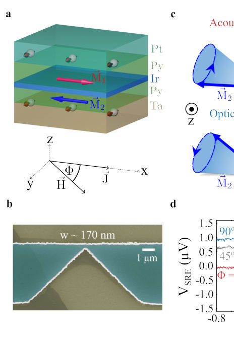
<figcaption class="paper-figure-caption"><b>Fig 1.</b> FIG. 1.</figcaption>
</figure>
<figure class="paper-figure-card">

<figcaption class="paper-figure-caption"><b>Fig 2.</b> FIG. 2.</figcaption>
</figure>
<figure class="paper-figure-card">
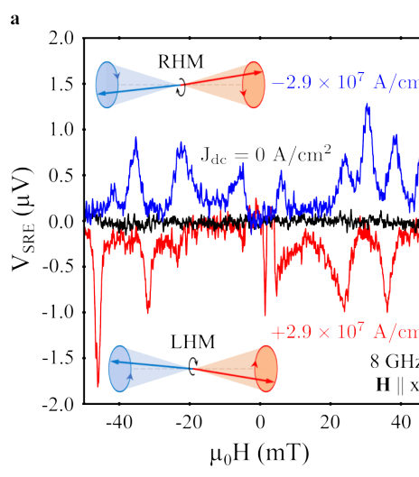
<figcaption class="paper-figure-caption"><b>Fig 3.</b> FIG. 3.</figcaption>
</figure>
<figure class="paper-figure-card">
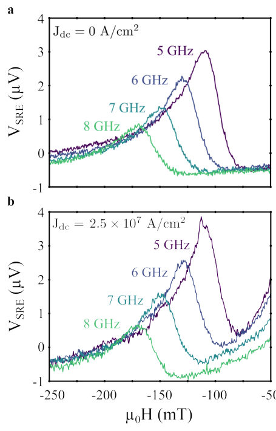
<figcaption class="paper-figure-caption"><b>Fig 4.</b> FIG. 4.</figcaption>
</figure>
</div>

<p><strong>Summary.</strong> This work investigates current-driven oscillations in synthetic antiferromagnets using spin-orbit torque. By measuring the spin-rectification voltage ($   ext{V}_{    ext{SRE}}$), the authors demonstrated that self-oscillations emerge above a critical DC current threshold, exhibiting characteristic signatures of injection locking. This establishes SAF nanoconstrictions as a viable platform for studying nonlinear spintronic oscillators.</p>
<p><strong>Why it may be interesting.</strong> While focused on spintronics, the study of driven, non-equilibrium collective excitations (self-oscillations) in magnetic systems shares conceptual links with open quantum system dynamics and nonlinear response theory relevant to AMO physics.</p>
<details>
<summary>Detailed structure</summary>
<p><strong>Main problem.</strong> The study aims to demonstrate and characterize spin-orbit torque (SOT)-driven self-oscillatory dynamics in synthetic antiferromagnets (SAFs) using electrical measurements.</p>
<p><strong>Main result.</strong> The research successfully identified low-field, current-induced peaks in the spin-rectification voltage ($ ext{V}_{    ext{SRE}}$), interpreted as signatures of current-selected chiral self-oscillations and injection locking near the spin-flop transition.</p>
<p><strong>Method.</strong> The study combines electrical measurements (spin-rectification spectroscopy) with theoretical modeling, utilizing both micromagnetic simulations and macrospin approximations.</p>
<p><strong>Model / system.</strong> The physical platform is a nanoconstriction patterned from a synthetic antiferromagnet (SAF) multilayer stack. The dynamics are governed by exchange coupling, spin-orbit torque (SOT), and applied DC/RF currents.</p>
<p><strong>Key observables.</strong> Spin-rectification voltage ($  ext{V}_{    ext{SRE}}$), acoustic and optical eigenmode resonance frequencies, Power Spectral Density (PSD) features indicating self-oscillation onset and injection locking.</p>
<p><strong>Important parameters / regimes.</strong> Critical DC current threshold ($J_{above}^{dc}$), applied magnetic field ($\vec{H}$), RF frequency range ($2	ext{ GHz}$ to $12	ext{ GHz}$).</p>
<p><strong>Assumptions / limitations.</strong> The observed $   ext{V}_{    ext{SRE}}$ peaks are interpreted as electrical signatures of self-oscillatory dynamics, rather than direct emission detection.</p>
<p><strong>Figures summary.</strong> Figures illustrate the SAF structure and patterned device; they show distinct resonance peaks for acoustic/optical modes (Fig. 1d); simulation results demonstrate threshold excitation of oscillations in PSDs (Fig. 2b); and $   ext{V}_{    ext{SRE}}$ measurements confirm current-dependent, self-oscillatory signatures (Fig. 3).</p>
<p><strong>Paper structure.</strong> The paper first establishes the linear eigenmodes via SRE spectroscopy across different angles ($\Phi$). It then investigates nonlinear dynamics by observing that additional peaks appear only when a DC current exceeds a critical threshold, confirming self-oscillation and subsequent injection locking.</p>
</details>
<details>
<summary>Abstract</summary>
<p>Antiferromagnets offer a promising route toward robust spintronic devices because of their compensated magnetic order and exchange-enhanced spin dynamics. Here, we demonstrate a spin-orbit torque (SOT)-driven antiferromagnetic oscillator based on a nanoconstriction patterned from a synthetic antiferromagnet (SAF). Spin-rectification spectroscopy reveals electrical excitation of both acoustic and optical SAF eigenmodes, whose field and frequency dependences are quantitatively described by an antiferromagnetic resonance model. In addition to these linear eigenmodes, we observe low-field spin-rectification peaks that emerge only above a threshold DC current near the spin-flop transition. Their current-polarity-dependent sign and locking to an injected RF frequency provide electrical spin-rectification signatures consistent with current-selected chiral self-oscillatory dynamics. Micromagnetic simulations reproduce the threshold excitation of SOT-driven self-oscillations and injection locking, while macrospin simulations predict stable and chaotic nonlinear dynamics within the same spin-flop region. We interpret the multi-peak, weakly RF-frequency-dependent responses as a qualitative signature of complex nonlinear dynamics. These results establish SAF nanoconstrictions as an experimentally accessible platform for studying current-driven antiferromagnetic-like oscillator dynamics and motivate future work on nonlinear spintronic devices for signal processing and reservoir-computing concepts.</p>
</details>
<p><sub><a href="#top">↑ back to top</a></sub></p>

<p><a id="paper-2607.04398"></a></p>
<h3 id="pseudo-superconducting-diode-effect-in-ferroelectric-josephson-junctions"><a href="http://arxiv.org/abs/2607.04398v1">Pseudo-superconducting-diode effect in ferroelectric Josephson junctions</a></h3>
<p><strong>Authors:</strong> Yaozu Tang, Nienke ten Haaf, Artem Bondarenko, Mazhar N. Ali, Yaroslav M. Blanter<br>
<strong>Type:</strong> theory · <strong>Category:</strong> statistical mechanics · <strong>PDF:</strong> <a href="https://arxiv.org/pdf/2607.04398v1">https://arxiv.org/pdf/2607.04398v1</a><br>
<strong>Analysis basis:</strong> full PDF text, analyzed in chunks
<strong>Topic relevance:</strong> <code>driven-dissipative phase transition</code> <strong>3/5</strong> · <code>methods for driven-dissipative</code> <strong>3/5</strong> · <code>non-equilibrium dynamics</code> <strong>3/5</strong> · <code>non-equilibrium universality</code> <strong>2/5</strong> · <code>Frenkel-Kontorova</code> <strong>1/5</strong> · <code>Keldysh / 2PI / non-Gaussian methods</code> <strong>1/5</strong> · <code>correlated / nonlocal dissipation</code> <strong>1/5</strong></p>
<div class="figure-strip-hint">↔ Scroll figures horizontally</div>
<div class="paper-figures-scroll">
<figure class="paper-figure-card">

<figcaption class="paper-figure-caption"><b>Fig 1.</b> FIG. 1. Junction and potential landscapes. (a) Schematic of a FE-JJ with broken inversion symmetry due to interfacial insulating layers (I1 and I2). (b) Equivalent cir- cuit: the green box denotes the conventional RCSJ model, while the orange box represents ferroelectric dynamics. (c) Tilted washboard potential of the RCSJ model. (d) Landau double-well potential of the ferroelectric.</figcaption>
</figure>
<figure class="paper-figure-card">
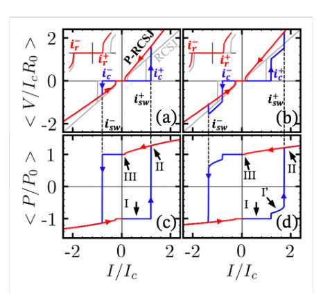
<figcaption class="paper-figure-caption"><b>Fig 2.</b> FIG. 2. Hysteresis in time-averaged voltage and polar- ization. (a), (b) Time-averaged voltage V = V/IcR0 under current sweeps for Landau coefficients A = 2, 4. Blue/red curves are RCSJ results with electric polarization (P-RCSJ), while gray curves are conventional RCSJ results without fer- roelectrics for comparison. The blue and red curves show RCSJ results with electric polarization (P-RCSJ), while the gray curves show conventional RCSJ results without ferro- electricity for comparison. Insets: zoom-in near retrapping currents. (c), (d) Corresponding time-averaged polarization P = P/P0 under current sweeps. The initial polarization is P(0) = −1.</figcaption>
</figure>
<figure class="paper-figure-card">
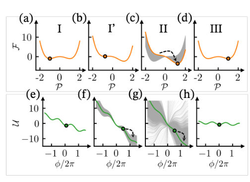
<figcaption class="paper-figure-caption"><b>Fig 3.</b> FIG. 3. Rocking double-well and washboard poten- tials. Potential landscapes are constructed using the time- averaged data and correspond, from left to right, to sweep points I, I’, II, and III in Fig. 2(d). Gray regions/curves indi- cate oscillation amplitudes. (a)–(d) Ferroelectric double-well potential profiles (orange curves) and polarization values (or- ange balls). (e)–(h) Corresponding Josephson-junction wash- board potentials (green curves) and phase values (green balls).</figcaption>
</figure>
<figure class="paper-figure-card">

<figcaption class="paper-figure-caption"><b>Fig 4.</b> FIG. 4. Histograms of critical (i± c ) and retrapping (i± r ) currents. The temperature T is set to (a) 0.1 K, (b) 0.2 K, (c) 0.5 K, and (d) 1 K. Each histogram (shown on a log- arithmic scale) is constructed from 1000 full current sweeps. The arrows at the top indicate the zero-temperature values of the critical and retrapping currents for reference. The critical temperature of the superconductor is estimated to be Tc ≃0.5 K using simple BCS approximation.</figcaption>
</figure>
<figure class="paper-figure-card">

<figcaption class="paper-figure-caption"><b>Fig 5.</b> FIG. 5. Time-averaged characteristics at T = 1 K. Time-averaged (a) voltage and (b) polarization under current sweeps. The purple arrow indicates the additional supercon- ducting region. The sweep protocol and initial conditions are the same as in Fig. 2(a). Dashed gray curves in (a) show the zero-temperature results for comparison.</figcaption>
</figure>
</div>

<p><strong>Summary.</strong> The paper theoretically investigates the pseudo-superconducting-diode effect in ferroelectric Josephson junctions by coupling superconducting dynamics with ferroelectric polarization switching. Using a coupled dynamical model solved numerically, the authors show that current sweeping induces nonreciprocal supercurrents due to history-dependent polarization changes. This confirms FE-JJs as tunable platforms for field-free nonreciprocal electronic devices.</p>
<p><strong>Why it may be interesting.</strong> This work models a complex interplay between quantum coherence (superconductivity) and classical/emergent order parameters (ferroelectricity), which is highly relevant for understanding open quantum systems where dissipation and environmental coupling drive macroscopic effects.</p>
<details>
<summary>Detailed structure</summary>
<p><strong>Main problem.</strong> The authors investigate the pseudo-superconducting-diode effect (SDE) in ferroelectric Josephson junctions, which manifests as nonreciprocal critical and retrapping supercurrents.</p>
<p><strong>Main result.</strong> They demonstrate that this nonreciprocity is a history-dependent, non-equilibrium phenomenon arising from current-induced polarization switching, confirming FE-JJs as promising field-free devices.</p>
<p><strong>Method.</strong> The study employs a coupled dynamical model combining the Resistively and Capacitively Shunted Junction (RCSJ) description with Landau-Khalatnikov-Tani ferroelectric dynamics, solved via numerical simulations including thermal noise.</p>
<p><strong>Model / system.</strong> The physical system is an inversion-asymmetric Ferroelectric Josephson Junction (FE-JJ). The model couples the superconducting phase dynamics ($\phi$) governed by a polarization-dependent RCSJ equation with the ferroelectric polarization ($P$) governed by the LKT equation.</p>
<p><strong>Key observables.</strong> Asymmetric critical and retrapping supercurrents ($i_{c\pm}, i_{r\pm}$), diode efficiency ($\eta$), time-averaged voltage, and polarization switching dynamics.</p>
<p><strong>Important parameters / regimes.</strong> Ferroelectric parameters (e.g., $   heta P_0$), temperature ($T$), and the bias current sweep protocol are crucial for tuning the nonreciprocity.</p>
<p><strong>Assumptions / limitations.</strong> The analysis assumes validity of linear approximations for critical current dependence on polarization in some contexts, and thermal noise is modeled as Gaussian white noise.</p>
<p><strong>Figures summary.</strong> Figures illustrate schematic setups, hysteresis loops showing voltage/polarization under sweeps (comparing P-RCSJ to conventional RCSJ), histograms of currents at finite T, and time evolution during switching events.</p>
<p><strong>Paper structure.</strong> The paper builds from defining the coupled dynamical model using Lagrangian formalism, deriving equations of motion for both superconducting and ferroelectric components, simulating current sweeps to observe hysteresis and polarization switching, and finally analyzing the temperature dependence of the resulting nonreciprocity.</p>
</details>
<details>
<summary>Abstract</summary>
<p>The superconducting diode effect (SDE), characterized by unequal critical supercurrents in opposite current directions, enables supercurrent rectification. We propose a magnetic-field-free pseudo-superconducting-diode effect in ferroelectric Josephson junctions with broken inversion symmetry. Using a coupled dynamical model that combines a polarization-dependent RCSJ description with Landau-Khalatnikov-Tani ferroelectric dynamics, we show that ferroelectric polarization switching induces asymmetric critical and retrapping currents under current sweeps. The resulting nonreciprocity is highly tunable via ferroelectric parameters and the sweep protocol and remains robust at finite temperatures. Our work identifies ferroelectric Josephson junctions as a promising platform for magnetic-field-free nonreciprocal superconducting devices.</p>
</details>
<p><sub><a href="#top">↑ back to top</a></sub></p>

<p><a id="paper-2607.03544"></a></p>
<h3 id="nonlocal-orbital-angular-momentum-dichroism-of-vortex-light-in-strained-crystals"><a href="http://arxiv.org/abs/2607.03544v1">Nonlocal Orbital-Angular-Momentum Dichroism of Vortex Light in Strained Crystals</a></h3>
<p><strong>Authors:</strong> Habib Rostami<br>
<strong>Type:</strong> theory · <strong>Category:</strong> other · <strong>PDF:</strong> <a href="https://arxiv.org/pdf/2607.03544v1">https://arxiv.org/pdf/2607.03544v1</a><br>
<strong>Analysis basis:</strong> full PDF text, analyzed in chunks
<strong>Topic relevance:</strong> <code>Keldysh / 2PI / non-Gaussian methods</code> <strong>3/5</strong> · <code>driven-dissipative phase transition</code> <strong>2/5</strong> · <code>methods for driven-dissipative</code> <strong>2/5</strong> · <code>analog quantum simulation</code> <strong>1/5</strong> · <code>correlated / nonlocal dissipation</code> <strong>1/5</strong> · <code>interference shaping light</code> <strong>1/5</strong> · <code>non-equilibrium dynamics</code> <strong>1/5</strong> · <code>non-equilibrium universality</code> <strong>1/5</strong> · <code>spintronics-quantum-optics interface</code> <strong>1/5</strong></p>
<div class="figure-strip-hint">↔ Scroll figures horizontally</div>
<div class="paper-figures-scroll">
<figure class="paper-figure-card">
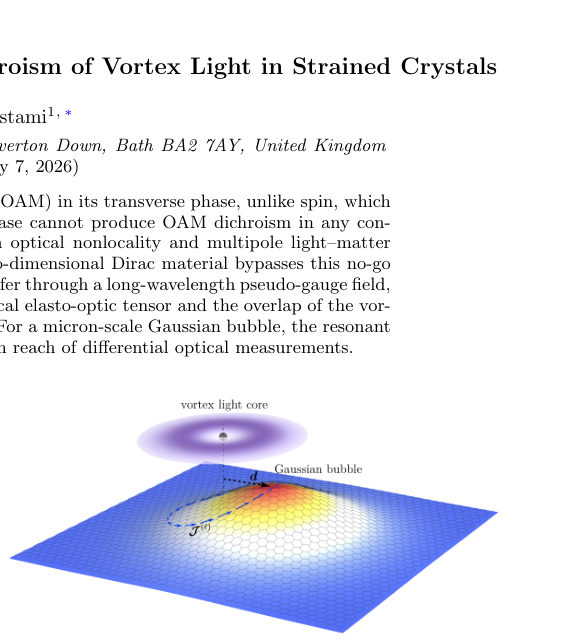
<figcaption class="paper-figure-caption"><b>Fig 1.</b> FIG. 1. Schematic of an optical vortex incident on a nonuni- formly strained hexagonal two-dimensional material. The sur- face represents a Gaussian strain bubble, with colour indicat- ing the deformation amplitude. The vortex core is displaced from the bubble center by the in-plane vector d. The circular arrows denote the vortex transverse phase current J (ℓ). This relative displacement breaks the common circular symmetry of the optical and strain profiles, enabling OAM-sensitive cou- pling through optical nonlocality.</figcaption>
</figure>
<figure class="paper-figure-card">
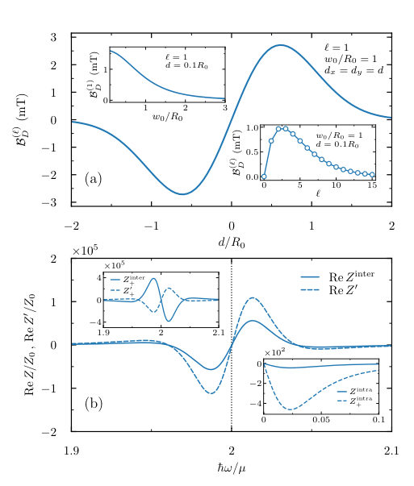
<figcaption class="paper-figure-caption"><b>Fig 2.</b> FIG. 2. OAM-projected geometric overlap integral B(ℓ) ab and SAM-projected material tensor Λ(s) ab for strain-assisted OAM dichroism. (a) Geometric overlap for a displaced Gaussian bubble, shown through B(ℓ) D = B(ℓ) xx −B(ℓ) yy . For dx = dy = d, the symmetric off-diagonal component B(ℓ) S = B(ℓ) xy + B(ℓ) yx is numerically identical to B(ℓ) D . The main panel shows B(1) D ver- sus d/R0 for ℓ= 1 and w0 = R0. Insets show its dependence on w0/R0 at ℓ= 1, dx = dy = 0.1R0, and on ℓat w0 = R0, dx = dy = 0.1R0. We use a Gr¨uneisen parameter β ≈2 and the universal bubble aspect ratio h0/R0 ≈0.1 [48]. We set R0 = 1 µm. (b) Material response near the interband reso- nance ℏω ≈2µ, normalized by Z0 =...</figcaption>
</figure>
</div>

<p><strong>Summary.</strong> This paper theoretically demonstrates that OAM dichroism in vortex light is forbidden in uniform crystalline media. By introducing nonuniform strain into a 2D Dirac material, the authors show how transverse momentum transfer can be supplied via a pseudo-gauge field. This allows for a measurable, non-zero OAM-odd optical conductivity, opening a pathway for differential optical measurements of strain effects.</p>
<p><strong>Why it may be interesting.</strong> This work connects topological light properties (OAM) with material strain engineering in 2D electron systems, providing a concrete mechanism for optical detection of subtle symmetry breaking effects relevant to condensed matter physics.</p>
<details>
<summary>Detailed structure</summary>
<p><strong>Main problem.</strong> The research investigates the mechanism by which Orbital Angular Momentum (OAM) dichroism of vortex light can be generated in condensed matter systems, overcoming theoretical no-go theorems.</p>
<p><strong>Main result.</strong> Nonuniform strain in a 2D Dirac material bypasses the no-go condition, allowing for a measurable OAM-odd conductivity ($\sim 10^{-3}e^2/\hbar$) through the coupling of vortex phase current with the strain field.</p>
<p><strong>Method.</strong> The analysis uses theoretical derivations involving nonlocal response functions, factorizing the dichroism into an elasto-optic tensor and a geometric overlap term derived from Green's function techniques.</p>
<p><strong>Model / system.</strong> The model employs a two-dimensional Dirac material Hamiltonian, specifically incorporating nonuniform strain (modeled as a Gaussian bubble) to break translational symmetry. The analysis considers both interband and intraband contributions to the optical response.</p>
<p><strong>Key observables.</strong> OAM dichroism ($\Delta\sigma_{OAM}$), nonlocal elasto-optic tensor ($\Lambda^{(s)}_{ab}$), and Geometric Overlap Tensor ($B^{(\ell)}_{ab}$).</p>
<p><strong>Important parameters / regimes.</strong> Strain amplitude ($\alpha$), beam waist ($w_0$), bubble displacement ($d$), and the ratio of material parameters defining valley inequivalence.</p>
<p><strong>Assumptions / limitations.</strong> The analysis relies on perturbative expansions in strain/momentum transfer (Q) and assumes specific limits for integrals, such as $k=0$ for intraband calculations.</p>
<p><strong>Figures summary.</strong> Figures illustrate the physical setup (vortex light on strained material), show the dependence of the geometric overlap term on displacement, and plot resonant enhancements of material coefficients near resonance.</p>
<p><strong>Paper structure.</strong> The paper first establishes the no-go theorem for OAM dichroism in translationally invariant systems. It then introduces strain as the necessary symmetry breaker, developing theoretical frameworks to calculate the nonlocal elasto-optic tensor ($\Lambda$) and the geometric overlap ($B$). Finally, it calculates these terms for specific Dirac models.</p>
</details>
<details>
<summary>Abstract</summary>
<p>Vortex light carries orbital angular momentum (OAM) in its transverse phase, unlike spin, which is encoded in polarization. We show that this phase cannot produce OAM dichroism in any continuously translation-invariant system, even when optical nonlocality and multipole light--matter coupling are included. Nonuniform strain in a two-dimensional Dirac material bypasses this no-go condition by supplying transverse momentum transfer through a long-wavelength pseudo-gauge field, so that the OAM dichroism factorizes into a nonlocal elasto-optic tensor and the overlap of the vortex transverse phase current with the strain field. For a micron-scale Gaussian bubble, the resonant OAM-odd conductivity reaches \(\sim10^{-3}e^2/\hbar\), within reach of differential optical measurements.</p>
</details>
<p><sub><a href="#top">↑ back to top</a></sub></p>

<p><a id="paper-2607.04358"></a></p>
<h3 id="quasi-two-dimensional-majorana-zero-modes-from-finite-size-coupled-chiral-hinge-states"><a href="http://arxiv.org/abs/2607.04358v1">Quasi-two-dimensional Majorana zero modes from finite-size-coupled chiral hinge states</a></h3>
<p><strong>Authors:</strong> Wenhao Liang, Xun-Jiang Luo<br>
<strong>Type:</strong> theory · <strong>Category:</strong> other · <strong>PDF:</strong> <a href="https://arxiv.org/pdf/2607.04358v1">https://arxiv.org/pdf/2607.04358v1</a><br>
<strong>Analysis basis:</strong> full PDF text, analyzed in chunks
<strong>Topic relevance:</strong> <code>analog quantum simulation</code> <strong>3/5</strong> · <code>Keldysh / 2PI / non-Gaussian methods</code> <strong>2/5</strong> · <code>driven-dissipative phase transition</code> <strong>2/5</strong> · <code>methods for driven-dissipative</code> <strong>2/5</strong> · <code>Kondo &amp; dissipative impurity</code> <strong>1/5</strong> · <code>correlated / nonlocal dissipation</code> <strong>1/5</strong> · <code>correlated cavity matter</code> <strong>1/5</strong> · <code>non-equilibrium dynamics</code> <strong>1/5</strong></p>
<div class="figure-strip-hint">↔ Scroll figures horizontally</div>
<div class="paper-figures-scroll">
<figure class="paper-figure-card">

<figcaption class="paper-figure-caption"><b>Fig 1.</b> FIG. 1. Schematic of the quasi-two-dimensional HOTI- superconductor geometry. A chiral HOTI slab is proximi- tized by a conventional s-wave superconductor. The sample is thin along x, extended along y, and finite along z. Oppo- site z-directed hinge states hybridize across the thin direction. The proximity-induced pairing gaps the two separated hinge- derived channels indicated by dashed red arrows. The four MZMs γ1,2,3,4 are localized at the endpoints of these channels in the y-z plane.</figcaption>
</figure>
<figure class="paper-figure-card">
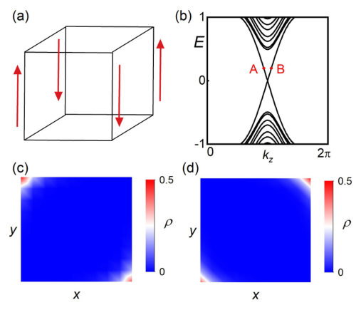
<figcaption class="paper-figure-caption"><b>Fig 2.</b> FIG. 2. Energy spectrum and real space distribution of chi- ral hinge states. (a) Propagation directions of the z-directed chiral hinge states. (b) Spectrum of a z-periodic wire with a 10 × 10 cross section and open boundary conditions in the x-y plane. (c),(d) Probability densities of the states marked A and B in (b), showing localization on complementary di- agonal hinge pairs. The model parameters are t = 1, M = 2, λ = 1, and m = 0.5</figcaption>
</figure>
<figure class="paper-figure-card">
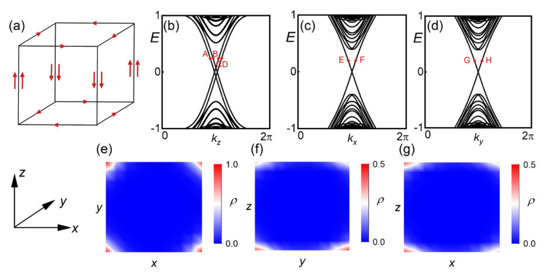
<figcaption class="paper-figure-caption"><b>Fig 3.</b> FIG. 3. The energy spectrum of HBdG with a wire geometry and distribution of chiral Majorana hinge modes. (a) Schematic illustration of the flow pattern of chiral Majorana hinge modes. (b)–(d) BdG spectra for wire geometries periodic along z, x, and y, respectively, with a 10 × 10 cross section and open boundary conditions in the two transverse directions. Red points A–H mark representative in-gap hinge states. (e)–(g) Summed probability densities of the marked states in the corresponding cross sections: (e) states A–D in the x-y plane, (f) states E–F in the y-z plane, and (g) states G–H in the x-z plane. The model parameters are t = 1, M = 2, λ = 1, m = 1, µ = 0.1, and ∆= 0.3.</figcaption>
</figure>
<figure class="paper-figure-card">
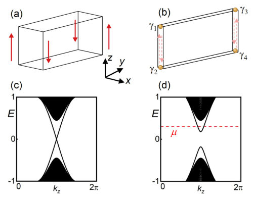
<figcaption class="paper-figure-caption"><b>Fig 4.</b> FIG. 4. Finite-size-induced reconstruction of the chiral HOTI hinge spectrum. (a) Schematic illustration of decoupled chi- ral hinge states in the thick limit. (b) Schematic illustration of coupled hinge states forming helical channels in the thin limit; upon superconducting proximitization, these channels terminate in MZMs γ1,2,3,4 at their endpoints. (c) Normal- state spectrum for Lx = 10 and Ly = 80, corresponding to the decoupled limit in (a). (d) Normal-state spectrum for Lx = 2 and Ly = 80, corresponding to the coupled limit in (b). The red dashed line marks a chemical potential within the energy window of the coupled hinge states. The common model parameters are t = 1, M = 2, λ = 1,...</figcaption>
</figure>
<figure class="paper-figure-card">

<figcaption class="paper-figure-caption"><b>Fig 5.</b> FIG. 5. Energy spectral evolution and real-space distribution of MZMs. (a)–(c) BdG energy spectra with periodic boundary conditions along z and open boundary conditions in the x-y plane for a 2×80 cross section, at µ = 0.1, 0.17, and 0.3, respectively. The gap closes near the transition point (b) and reopens for larger µ (c). (d) Energy spectrum under open boundary conditions for the parameters in (a) with system size 2×80×80. Red points mark the low-energy states used in (e). (e) Density projected along the thin x direction for the marked states in (d). (f) Energy spectrum of under the open boundary conditions for the parameters in (c), where four MZMs appear inside the superconducting...</figcaption>
</figure>
</div>

<p><strong>Summary.</strong> The paper proposes realizing multiple Majorana zero modes by coupling chiral hinge states within a higher-order topological insulator (HOTI) when placed in proximity to an s-wave superconductor. Using theoretical modeling, the authors show that this confinement mechanism opens a superconducting gap and localizes four robust MZMs at the sample corners. This establishes a promising platform for detecting and utilizing Majorana corner states.</p>
<p><strong>Why it may be interesting.</strong> This work provides a concrete theoretical blueprint for engineering multiple, spatially separated Majorana modes using established material platforms (HOTIs), which is highly relevant for designing fault-tolerant quantum hardware architectures.</p>
<details>
<summary>Detailed structure</summary>
<p><strong>Main problem.</strong> The work proposes a theoretical route to realize spatially separated Majorana zero modes (MZMs) by coupling chiral hinge states in a higher-order topological insulator (HOTI). This aims to create a platform for studying topological superconductivity.</p>
<p><strong>Main result.</strong> By confining the system and inducing superconducting proximity effects, the model predicts the formation of four robust localized MZMs at the corners of the quasi-two-dimensional sample. These corner modes are stable against weak disorder as long as the bulk gap remains open.</p>
<p><strong>Method.</strong> The study employs theoretical modeling using the Bogoliubov-de Gennes (BdG) Hamiltonian to analyze the superconducting proximity effect on chiral hinge states derived from a HOTI model.</p>
<p><strong>Model / system.</strong> The system is a quasi-two-dimensional realization of a chiral HOTI proximitized by an s-wave superconductor. The physics relies on gapless hinge states along one direction, which hybridize upon finite-size confinement to form helical channels exhibiting effective p-wave pairing.</p>
<p><strong>Key observables.</strong> Localized Majorana zero modes (MZMs) at the corners; robust zero-bias conductance peaks detectable via STM spectroscopy.</p>
<p><strong>Important parameters / regimes.</strong> The chemical potential ($\mu$) relative to the reconstructed hinge bands, and the superconducting gap amplitude ($\Delta$).</p>
<p><strong>Assumptions / limitations.</strong> The approach assumes that chiral hinge states are experimentally accessible in magnetic topological insulators and that the proximity effect induces effective p-wave pairing.</p>
<p><strong>Figures summary.</strong> Figures illustrate the schematic geometry of the quasi-2D system, show energy spectra confirming gapless hinge states (Fig. 2), demonstrate the opening of a topological gap leading to localized MZMs (Figs. 3(b)-(d)), and confirm robustness against disorder (Fig. 7).</p>
<p><strong>Paper structure.</strong> The paper builds the argument by first establishing chiral hinge states in the HOTI, then incorporating s-wave pairing via the BdG Hamiltonian, demonstrating the finite-size coupling mechanism to localize MZMs, and finally verifying their topological protection against disorder.</p>
</details>
<details>
<summary>Abstract</summary>
<p>Majorana zero modes (MZMs) in topological superconductors have attracted broad research interest for their potential applications in topological quantum computation. In this work, we propose a quasi-two-dimensional route to realize spatially separated MZMs in a chiral higher-order topological insulator (HOTI) proximitized by a conventional $s$-wave superconductor through a theoretical model study. In three dimensions, the chiral HOTI hosts gapless hinge states along the $z$ direction, arising from a mass term that anisotropically gaps the surface Dirac cones of a topological insulator. By confining the sample along the $x$ direction while keeping it extended along $y$ and finite along $z$, opposite $z$-directed chiral hinge states hybridize and effectively form one-dimensional helical channels. Incorporating the superconducting proximity effect into this quasi-two-dimensional system induces effective $p$-wave pairing in these helical channels, thereby opening a topological gap. A fully open-boundary sample then hosts four localized MZMs, one at each endpoint of the helical channels, realizing a second-order topological superconductor characterized by Majorana corner modes. In addition to MZMs, we also find that superconducting pairing in this model produces extended Majorana hinge modes in three dimensions. Furthermore, representative disorder calculations indicate that these Majorana corner modes are robust against weak-to-moderate disorder, provided the excitation gap remains open. These results establish finite-size-coupled chiral hinge states as a promising platform for engineering multiple MZMs via conventional superconducting proximity effect.</p>
</details>
<p><sub><a href="#top">↑ back to top</a></sub></p>

<p><a id="paper-2607.05370"></a></p>
<h3 id="calibration-of-systematic-distortions-in-quantum-emitter-localization-microscopy-for-deterministic-nanophotonic-fabrication"><a href="http://arxiv.org/abs/2607.05370v1">Calibration of systematic distortions in quantum emitter localization microscopy for deterministic nanophotonic fabrication</a></h3>
<p><strong>Authors:</strong> Chenxi Ma, Maximilian Heller, Timon Handrup, Yiteng Zhang, Tobias M. Krieger, Thomas Oberleitner, Zenghui Jiang, Xian Zheng, Eddy P. Rugeramigabo, Folke Dencker, Armando Rastelli, Fei Ding, Michael Zopf<br>
<strong>Type:</strong> experiment · <strong>Category:</strong> other · <strong>PDF:</strong> <a href="https://arxiv.org/pdf/2607.05370v1">https://arxiv.org/pdf/2607.05370v1</a><br>
<strong>Analysis basis:</strong> full PDF text, analyzed in chunks
<strong>Topic relevance:</strong> <code>quantum measurements</code> <strong>3/5</strong> · <code>quantum optics experiment</code> <strong>3/5</strong> · <code>QC/QI experiment</code> <strong>2/5</strong> · <code>analog quantum simulation</code> <strong>1/5</strong> · <code>interference shaping light</code> <strong>1/5</strong> · <code>measurement-induced transitions</code> <strong>1/5</strong> · <code>spintronics-quantum-optics interface</code> <strong>1/5</strong></p>
<div class="figure-strip-hint">↔ Scroll figures horizontally</div>
<div class="paper-figures-scroll">
<figure class="paper-figure-card">

<figcaption class="paper-figure-caption"><b>Fig 1.</b> Figure 1. Schematic of the optical setup and calibration workflow. (a) 3D illustration of the wide-field PL microscope setup for optical positioning. BS, beamsplitter. (b) From bottom to top: SEM image of a 3×3 gold nanodisk calibration array; wide-field reflection image of the central marker field; and conceptual illustration comparing positions extracted from wide-field images (blue) with their nominal design positions (gray). Spatially varying residuals between the two coordinate sets are used to map the optical distortion field. Scale bars in the SEM and reflection images are 10 µm. (c) Distortion calibration workflow.</figcaption>
</figure>
<figure class="paper-figure-card">
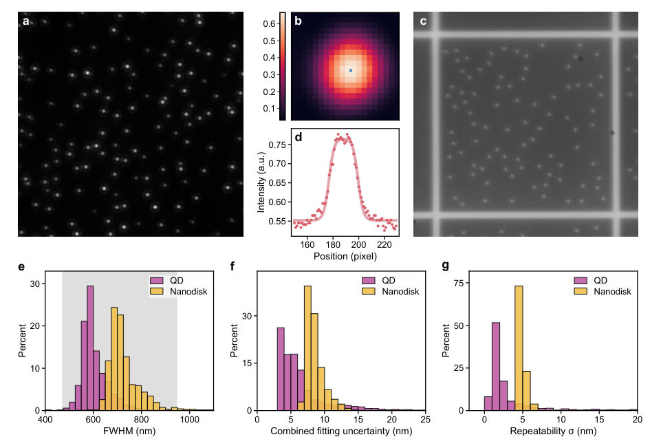
<figcaption class="paper-figure-caption"><b>Fig 2.</b> Figure 2. Performance of the optical positioning setup. (a) Representative wide-field PL image of QD emission acquired through a 785 nm narrow bandpass filter. (b) Magnified image of a 2D Gaussian fit for a representative QD. (c) Reflection image of the marker frame and nanodisks from the same field as (a), acquired through a 785 nm narrow bandpass filter. The markers define an area of 40×40 µm2. (d) Representative cross-section of a marker arm and the corresponding fit. (e) Distributions of the fitted FWHM values for QDs and nanodisks, with the shaded region spanning from the Gaussian approximation of the diffraction-limited PSF (FWHMdiff = 473nm) to 2×FWHMdiff. (f) Distributions of the...</figcaption>
</figure>
<figure class="paper-figure-card">

<figcaption class="paper-figure-caption"><b>Fig 3.</b> Figure 3. Training and forward validation of the distortion-calibration model. (a) Schematic of the self-calibration process, in which a Zernike distortion model is fitted to the nanodisk offsets of both arrays. (b) Spatial map of the raw nanodisk offsets between optically extracted positions and design positions for both arrays. The arrows indicate the offset directions, and the color scale indicates the offset magnitude. (c) Overlaid 2D histogram of the nanodisk offsets before (blue) and after (orange) correction by the Zernike distortion model. (d) Schematic of the forward validation process. The model is trained on one array and then applied to the held-out array, after which the...</figcaption>
</figure>
<figure class="paper-figure-card">

<figcaption class="paper-figure-caption"><b>Fig 4.</b> Figure 4. Polarization response of deterministically fabricated mesas. (a) SEM image of a region inside the mesa array. (b) Background-subtracted co- and cross-polarized PL spectra from a distortion-corrected mesa, corresponding to the polarization angles of Imax and Imin. The inset shows representative polar plots of the integrated PL intensity as a function of the linear polarization angle for a background QD (gray), a raw-positioned mesa (blue), and a distortion-corrected mesa (orange). (c) Scatter plot of the system-corrected Stokes components. The dashed circle indicates the DOLP expected for a centered emitter in an elliptical mesa with SEM-measured diameters. (d) Histograms of...</figcaption>
</figure>
</div>

<p><strong>Summary.</strong> This paper presents an advanced calibration protocol to correct systematic optical distortions in complex, custom cryo-optical setups used for localizing quantum emitters. By modeling these distortions using a Zernike vector-field approach and validating it with nanodisk arrays, the authors significantly improved absolute positioning accuracy. This method offers a practical pathway to deterministically integrating quantum light sources into scalable photonic circuits.</p>
<p><strong>Why it may be interesting.</strong> This work is highly relevant to experimental quantum optics and open quantum systems as it provides a critical metrological tool necessary to translate high-precision statistical measurements into reliable absolute positioning required for building functional quantum devices.</p>
<details>
<summary>Detailed structure</summary>
<p><strong>Main problem.</strong> The ultimate integration yield of quantum emitters into photonic structures is limited by uncorrected systematic optical distortions inherent in custom cryo-optical setups, even when statistical localization uncertainty is low.</p>
<p><strong>Main result.</strong> An <em>in situ</em> calibration protocol using a Zernike vector-field model reduced the residual systematic bias to 5.3 nm and improved emission polarization variance by 49% upon application to deterministic fabrication.</p>
<p><strong>Method.</strong> The authors developed an in situ metrological calibration framework that models field-dependent coordinate offsets using a Zernike polynomial expansion, applied to lithographically defined reference arrays.</p>
<p><strong>Model / system.</strong> The experiment uses quantum emitter localization microscopy on semiconductor quantum dots (QDs) within custom cryo-optical setups. The systematic distortions are modeled mathematically using the Zernike vector-field model for correction.</p>
<p><strong>Key observables.</strong> Residual systematic bias (reduced to 5.3 nm), polarization variance reduction (49%), and localization repeatability ($\sigma$).</p>
<p><strong>Important parameters / regimes.</strong> Nanometer-scale accuracy, cryogenic temperature (4 K), Zernike polynomial order ($n=10$), and the use of lithographically defined gold nanodisk arrays as references.</p>
<p><strong>Assumptions / limitations.</strong> The primary limitation addressed is uncorrected systematic optical distortions; one assumption involves approximating the QD emission source for simulation purposes.</p>
<p><strong>Figures summary.</strong> Figures illustrate the setup schematic, performance metrics comparing localization uncertainties (QD vs. nanodisks), and validation showing the reduction of systematic offsets after applying the Zernike correction model.</p>
<p><strong>Paper structure.</strong> The paper introduces the problem of systematic distortion limiting integration yield, details the use of a Zernike vector-field model calibrated with reference arrays, presents quantitative results showing bias reduction and polarization improvement, and concludes by establishing the method's utility for scalable quantum photonic circuits.</p>
</details>
<details>
<summary>Abstract</summary>
<p>Quantum photonic technologies greatly benefit from quantum light emitters with high brightness, indistinguishability, and reliable polarization characteristics. Achieving optimal performance relies on the accurate localization of emitters and their deterministic integration into tailored photonic structures with nanometer-scale accuracy. Although marker-based photoluminescence imaging techniques can achieve statistical fitting uncertainties below 10 nm, the ultimate integration yield is often limited by uncorrected systematic distortions in custom cryo-optical setups that compromise metrological accuracy. Here, we present an in situ calibration protocol that uses lithographically defined gold nanodisk arrays as references to calibrate optical distortions with a Zernike vector-field model. On held-out validation patterns beyond the calibration dataset, this correction reduces the residual systematic bias to 5.3 nm with a 2D scatter of 24.6 nm across the analyzed field of view. Furthermore, we demonstrate that applying this correction to the deterministic fabrication of circular mesa structures around semiconductor quantum dots reduces the variance in emission polarization by 49%, indicating improved registration accuracy. This calibration strategy offers a practical route to high-yield deterministic integration of quantum emitters into scalable quantum photonic circuits.</p>
</details>
<p><sub><a href="#top">↑ back to top</a></sub></p>

<p><a id="paper-2607.03698"></a></p>
<h3 id="graph-based-kirchhoff-modeling-of-non-ohmic-electron-transport-in-self-assembled-nanonecklace-networks"><a href="http://arxiv.org/abs/2607.03698v1">Graph-Based Kirchhoff Modeling of Non-Ohmic Electron Transport in Self-Assembled Nanonecklace Networks</a></h3>
<p><strong>Authors:</strong> Obed Issakah, Srivathsan Badrinarayanan, Ravi F. Saraf, Janghoon Ock<br>
<strong>Type:</strong> theory · <strong>Category:</strong> disordered systems and neural networks · <strong>PDF:</strong> <a href="https://arxiv.org/pdf/2607.03698v1">https://arxiv.org/pdf/2607.03698v1</a><br>
<strong>Analysis basis:</strong> full PDF text, analyzed in chunks
<strong>Topic relevance:</strong> <code>methods for driven-dissipative</code> <strong>3/5</strong> · <code>non-equilibrium dynamics</code> <strong>3/5</strong> · <code>driven-dissipative phase transition</code> <strong>2/5</strong> · <code>non-equilibrium universality</code> <strong>2/5</strong> · <code>Frenkel-Kontorova</code> <strong>1/5</strong> · <code>Keldysh / 2PI / non-Gaussian methods</code> <strong>1/5</strong></p>
<div class="figure-strip-hint">↔ Scroll figures horizontally</div>
<div class="paper-figures-scroll">
<figure class="paper-figure-card">

<figcaption class="paper-figure-caption"><b>Fig 1.</b> Figure 1: Overview of the graph-based Kirchhoff modeling framework. A self-assembled gold nanonecklace film deposited between source and drain electrodes (left) is viewed as a synthetic random geometric graph. Each nodes is a junction with an activation voltage Va (centre). At each applied bias, the graph-based Kirchhoff solver computes the current flowing between each pair of connected nodes, yielding the identified source-drain current flowing between each pair of connected nodes pathways and the resulting nonlinear I–V response, fitted to I ∼(V −VT)ζ with threshold voltage VT (right).</figcaption>
</figure>
<figure class="paper-figure-card">
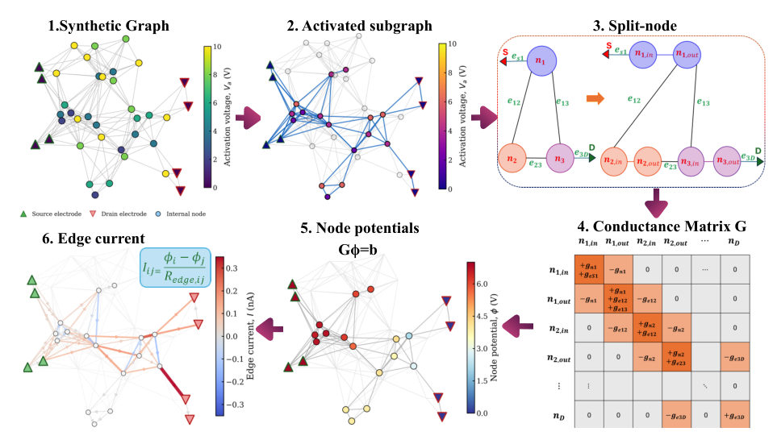
<figcaption class="paper-figure-caption"><b>Fig 2.</b> Figure 2: Step-by-step operation of the graph-based Kirchhoff solver. (1) The synthetic graph, with nodes coloured by activation voltage Va. (2) At a given applied bias, only junctions with Va ≤V remain, forming the conducting subgraph. (3) Each active internal node is split into input and output sub-nodes joined by its node resistance Rnode. (4) The split-node network is assembled into the sparse conductance matrix G. (5) Solving Gφ = b gives the sub-node potentials φ. (6) The edge currents follow from the potential drops across the connecting edges, Iij = (φi −φj)/Redge,ij.</figcaption>
</figure>
<figure class="paper-figure-card">

<figcaption class="paper-figure-caption"><b>Fig 3.</b> Figure 3: Macroscopic I–V response and microscopic diagnostics of bias-driven junction activation. (a) Ensemble-averaged I–V response obtained from five independent network realizations at N = 500, ⟨Va⟩= 6 V, σa = 3 V, and fv = 0.00, showing the low-current blockade (Phase 1), the superlinear power-law onset (Phase 2), and the quasi-linear high-bias regime (Phase 3). (b) Activated-node count, (c) algebraic connectivity λ2 of the conducting subgraph, and (d) source-to-drain effective resistance. (e) Spatial snapshots of the conducting network at 1, 2, 6, and 14 V, with source (green) and drain (red) electrodes and activated (filled) versus inactive (faded) nodes.</figcaption>
</figure>
<figure class="paper-figure-card">

<figcaption class="paper-figure-caption"><b>Fig 4.</b> Figure 4: Mean-activation-voltage dependence of collective transport in nanonecklace net- works. (a) I–V characteristics for ⟨Va⟩= 4, 6, 8, and 10 V at fixed σa = 1 V. (b) Cor- responding activation-voltage distributions. (c) Activated-node population Nact vs. applied voltage. (d) Algebraic connectivity λ2 of the active subnetwork. (e) Threshold voltage VT vs. ⟨Va⟩. (f) Transport exponent ζ from power-law fits. (g) Experimental scaling collapse for self-assembled gold necklace networks, reproduced from Kane et al.13 (h) Active conducting subnetworks at fixed applied voltage for ⟨Va⟩= 4, 6, 8, and 10 V.</figcaption>
</figure>
<figure class="paper-figure-card">

<figcaption class="paper-figure-caption"><b>Fig 5.</b> Figure 5: Network-density dependence of collective transport in nanonecklace networks. (a) I–V characteristics for N = 200, 400, 600, and 800 junctions at fixed ⟨Va⟩= 6 V, σa = 3 V. (b) Activated-node population vs. applied voltage. (c) Algebraic connectivity of the conducting subgraph. (d) Threshold voltage VT vs. N. (e) Transport exponent ζ vs. N. (f) Experimental threshold-voltage–coverage relationship, reproduced from Wilson et al.7</figcaption>
</figure>
</div>

<p><strong>Summary.</strong> This work develops a graph-based Kirchhoff model to simulate current flow in self-assembled nanonecklace networks exhibiting Coulomb blockade. By treating the network as a dynamic graph, the authors show that the macroscopic non-Ohmic transport behavior emerges from the collective activation of individual junctions. This establishes the framework as a powerful design tool for engineering electronic properties in disordered nanoscale devices.</p>
<p><strong>Why it may be interesting.</strong> While focused on classical charge transport, the concept of percolation in disordered media, threshold switching, and emergent collective behavior is highly relevant to understanding quantum phase transitions or correlated electron dynamics in mesoscopic structures.</p>
<details>
<summary>Detailed structure</summary>
<p><strong>Main problem.</strong> The study addresses the poorly understood mechanisms governing the macroscopic non-Ohmic current–voltage (I–V) response in self-assembled gold nanonecklace networks.</p>
<p><strong>Main result.</strong> The model successfully reproduces the characteristic $I \propto (V - V_T)^\zeta$ power law, showing that this behavior arises from collective, staggered activation of threshold junctions and voltage-driven percolation.</p>
<p><strong>Method.</strong> A graph-based Kirchhoff framework is developed to solve for potentials and currents across a network modeled as a geometric graph whose conductivity changes dynamically with applied bias.</p>
<p><strong>Model / system.</strong> The system is a synthetic random geometric graph representing nanonecklace networks. Junctions have distance-dependent tunneling resistances, and nodes possess intrinsic resistance governed by an activation voltage threshold ($R_{n,i} \propto V_{a,i}$).</p>
<p><strong>Key observables.</strong> Non-Ohmic I–V response ($I \propto (V - V_T)^\zeta$), active nodes, conducting subgraph evolution, nodal potentials, and edge currents.</p>
<p><strong>Important parameters / regimes.</strong> Mean activation voltage ($\langle V_a 
angle$), variance of activation voltages ($\sigma_a$), network density/void fraction ($f_v$), and the applied bias $V$.</p>
<p><strong>Assumptions / limitations.</strong> The node resistance is approximated as linearly proportional to the activation voltage for computational tractability, and the global bias is used as the primary activation criterion.</p>
<p><strong>Figures summary.</strong> Figures illustrate the step-by-step solver process (graph formation, subgraph selection, matrix solving) and show how varying structural parameters ($\sigma_a$, $f_v$) controls the exponent $\zeta$ and threshold voltage $V_T$.</p>
<p><strong>Paper structure.</strong> The paper introduces the physical problem, details the graph-based Kirchhoff methodology for solving bias-dependent conduction, presents results showing parameter control over transport exponents, and concludes by establishing the model as a design tool.</p>
</details>
<details>
<summary>Abstract</summary>
<p>Gold nanonecklace networks are promising platforms for single-electron switching, chemical sensing, and biogating devices because of their nonlinear current--voltage ($I$--$V$) characteristics arising from collective Coulomb-blockade transport. However, the mechanisms governing this macroscopic behavior remain poorly understood because experimental measurements are generally limited to the network topology and global $I$--$V$ response. To address this, we developed a graph-based Kirchhoff framework that represents a self-assembled nanonecklace network as a graph, with nodes corresponding to junctions between necklace segments and edges to the conducting segments themselves. The solver returns the active nodes, conducting subgraph, nodal potentials, and edge currents at each applied bias, while allowing the activation-voltage statistics, network density, and structural topology to be varied independently. The model reproduces the experimentally observed non-Ohmic response, $I \propto (V-V_T)^ζ$, and shows that this behavior emerges from the collective, staggered activation of threshold junctions and voltage-driven percolation of the conducting subgraph. Independent parameter sweeps reveal that the mean activation voltage shifts the threshold $V_T$ while leaving $ζ$ nearly unchanged, increasing network density raises $ζ$ from approximately 1.9 to 3.1 and enhances current, and topology controls the response even at fixed density and node characteristics. These trends agree qualitatively with experimental observations and establish the model as a design tool for engineering collective transport in self-assembled nanonecklace devices.</p>
</details>
<p><sub><a href="#top">↑ back to top</a></sub></p>

<p><a id="paper-2607.05296"></a></p>
<h3 id="semiconductor-nanofilms-as-thermal-phonon-polarizers-competing-effects-of-scattering-selection-rules-and-boundary-mode-conversion"><a href="http://arxiv.org/abs/2607.05296v1">Semiconductor nanofilms as thermal phonon polarizers: competing effects of scattering selection rules and boundary mode conversion</a></h3>
<p><strong>Authors:</strong> Vasumathy Ravishankar, Navaneetha K. Ravichandran<br>
<strong>Type:</strong> theory · <strong>Category:</strong> statistical mechanics · <strong>PDF:</strong> <a href="https://arxiv.org/pdf/2607.05296v1">https://arxiv.org/pdf/2607.05296v1</a><br>
<strong>Analysis basis:</strong> full PDF text, analyzed in chunks
<strong>Topic relevance:</strong> <code>non-equilibrium dynamics</code> <strong>3/5</strong> · <code>non-equilibrium universality</code> <strong>2/5</strong> · <code>Keldysh / 2PI / non-Gaussian methods</code> <strong>1/5</strong> · <code>correlated / nonlocal dissipation</code> <strong>1/5</strong> · <code>driven-dissipative phase transition</code> <strong>1/5</strong> · <code>methods for driven-dissipative</code> <strong>1/5</strong></p>
<div class="figure-strip-hint">↔ Scroll figures horizontally</div>
<div class="paper-figures-scroll">
<figure class="paper-figure-card">
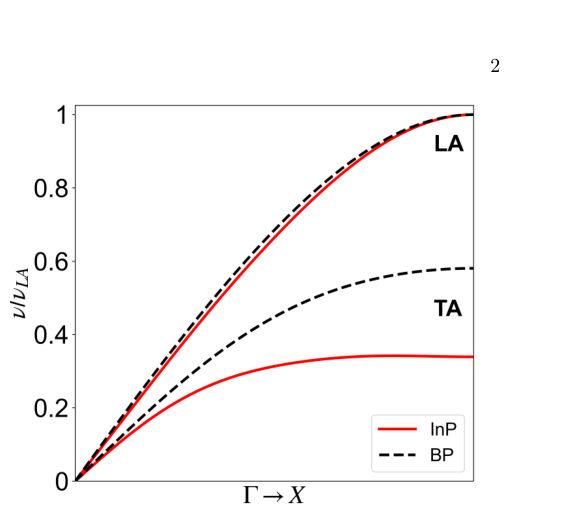
<figcaption class="paper-figure-caption"><b>Fig 1.</b> FIG. 1. Acoustic phonon dispersions of InP and BP along the Γ →X high symmetry direction. The phonon dispersions along other high-symmetry directions for these materials are shown in Supplementary Figs. S1(a)-(b). LA and TA phonon dispersions are farther apart in InP than in BP, thus activat- ing the AAA # 2 selection rule in InP [2].</figcaption>
</figure>
<figure class="paper-figure-card">

<figcaption class="paper-figure-caption"><b>Fig 2.</b> FIG. 2. Effect of mode conversion on the κ of BP and InP thin films at 100 K. (a) Thin film κ of BP and InP vs. thickness (d) normalized by the corresponding bulk values (κb) at 100 K. The inset shows the simulation geometry, and the incidence (θin) and the reflection (θout) angles for a phonon undergoing mode conversion at the thin film boundary. For specular reflection without mode conversion, the κ’s of thin films are equal to κb, independent of d [20]. When mode conversion is allowed, the predicted κ’s for specular reflections decrease faster with d in InP than in BP. For diffuse reflections, the predicted κ (d)’s remain the same with or without mode conversion in both materials, hence...</figcaption>
</figure>
<figure class="paper-figure-card">
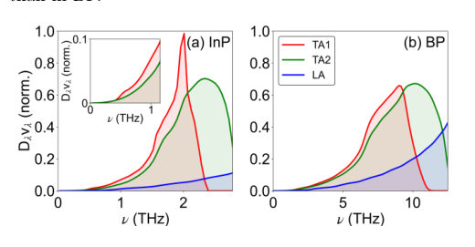
<figcaption class="paper-figure-caption"><b>Fig 3.</b> FIG. 3. The normalized material factor Dλvλ of the mode conversion probabilities in InP (a) and BP (b). The x-axis is truncated at the maximum ν of the TA2 branch, beyond which mode conversion does not occur for the LA phonons [Fig. 2 (b)], since DTA1 λ = DTA2 λ = 0. In both materials, Dλvλ is much larger for the TA phonons than for the LA phonons, with the contrast being greater for InP than BP, due to the large velocity differences of the phonon polarizations in the former.</figcaption>
</figure>
<figure class="paper-figure-card">

<figcaption class="paper-figure-caption"><b>Fig 4.</b> FIG. 4. Thickness-dependent κ of InP films at different cryo- genic temperatures scaled by κb. When phonons undergo specular reflections with mode conversion, κ/κb saturates at larger d as T is lowered, due to the longer phonon MFPs at lower T. For diffuse reflections, mode conversion has no effect on κ (d) /κb.</figcaption>
</figure>
</div>

<p><strong>Summary.</strong> This work theoretically examines heat conduction in semiconductor nanofilms by analyzing the competition between intrinsic phonon scattering selection rules and boundary mode conversion. Using first-principles calculations, the authors show that mode conversion significantly suppresses the dominant LA phonon contribution in materials like InP at low temperatures. This effect allows for symmetry-selective engineering of thermal transport properties unattainable in bulk solids.</p>
<p><strong>Why it may be interesting.</strong> While focused on phonons, the concept of non-equilibrium energy transport and symmetry-selective coupling (e.g., electron-phonon interaction) is highly relevant to open quantum systems and thermalization studies in nanoscale devices.</p>
<details>
<summary>Detailed structure</summary>
<p><strong>Main problem.</strong> The paper investigates how phonon scattering selection rules compete with boundary mode conversion effects to modulate heat flow in nanoscale semiconductor films.</p>
<p><strong>Main result.</strong> Mode conversion strongly suppresses the large intrinsic LA phonon contribution to thermal conductivity ($\kappa$) in InP nanofilms, leading to a heat current dominated by out-of-equilibrium TA modes.</p>
<p><strong>Method.</strong> The study uses first-principles calculations solving the steady-state Peierls-Boltzmann equation (SSPBE) under the Relaxation Time Approximation (RTA).</p>
<p><strong>Model / system.</strong> The system involves semiconductor nanofilms, specifically InP and BP, at cryogenic temperatures. The physics models phonon transport governed by intrinsic scattering rules versus extrinsic boundary reflections.</p>
<p><strong>Key observables.</strong> Phonon mode-polarized heat currents and the thermal conductivity ($\kappa$) dependence on film thickness ($d$).</p>
<p><strong>Important parameters / regimes.</strong> Cryogenic temperatures ($\le 100$ K); nanoscale dimensions; phonon branch velocities (LA vs. TA).</p>
<p><strong>Assumptions / limitations.</strong> The analysis assumes that boundary reflection with mode conversion dominates over intrinsic scattering at sufficiently small thicknesses, and the RTA is sufficient for the studied materials.</p>
<p><strong>Figures summary.</strong> Figures compare $\kappa$ vs. thickness for BP and InP, showing suppression due to diffuse scattering and faster decay in InP when mode conversion occurs; spectral contributions are also analyzed.</p>
<p><strong>Paper structure.</strong> The paper builds from established knowledge of phonon selection rules in bulk solids to analyze the competition between these rules and boundary mode conversion effects in thin films using advanced computational methods.</p>
</details>
<details>
<summary>Abstract</summary>
<p>Phonon scattering selection rules are known to control heat flow through bulk solids. Here we show that these selection rules also modulate heat flow through nanoscale semiconductor films, although through a previously-unexplored mechanism. Using first-principles calculations, we expose a competition between these selection rules and phonon mode conversion at boundaries of nanoscale films, that drives mode-polarized heat currents at cryogenic temperatures ($\le$ 100 K). This polarizing effect is stronger in materials like indium phosphide, where selection rules based on large velocity differences between phonon branches amplifies the longitudinal acoustic (LA) phonon contribution to thermal conductivity by restricting their intrinsic scattering events, while boundary mode conversion in nanoscale films suppresses it by depopulating the LA phonons. The resulting transverse-polarized non-equilibrium phonons will enable symmetry-selective engineering of phonon coupling to electrons, strains and defects in nanoscale films, that is difficult to achieve in bulk solids.</p>
</details>
<p><sub><a href="#top">↑ back to top</a></sub></p>

<p><a id="paper-2607.04771"></a></p>
<h3 id="local-defects-and-the-topology-of-the-haldane-model"><a href="http://arxiv.org/abs/2607.04771v1">Local Defects and the Topology of the Haldane Model</a></h3>
<p><strong>Authors:</strong> Vishesh Makwana, Eric Akkermans<br>
<strong>Type:</strong> theory · <strong>Category:</strong> other · <strong>PDF:</strong> <a href="https://arxiv.org/pdf/2607.04771v1">https://arxiv.org/pdf/2607.04771v1</a><br>
<strong>Analysis basis:</strong> full PDF text, analyzed in chunks
<strong>Topic relevance:</strong> <code>analog quantum simulation</code> <strong>3/5</strong> · <code>driven-dissipative phase transition</code> <strong>2/5</strong> · <code>Kondo &amp; dissipative impurity</code> <strong>1/5</strong> · <code>exotic spin models in light-matter</code> <strong>1/5</strong> · <code>non-equilibrium dynamics</code> <strong>1/5</strong></p>
<div class="figure-strip-hint">↔ Scroll figures horizontally</div>
<div class="paper-figures-scroll">
<figure class="paper-figure-card">
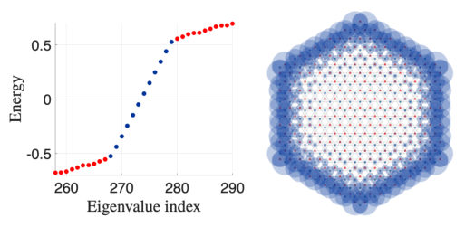
<figcaption class="paper-figure-caption"><b>Fig 1.</b> FIG. 2. Clean Haldane model (t1 = 1, t2 = 0.1, ϕ = π/2). Left: energy spectrum showing edge states (blue) inside the bulk gap and bulk modes (red) outside. Right: spatial prob- ability density |ψ|2 of a representative edge state (highlighted blue in the spectrum), confirming localization along the sys- tem boundary.</figcaption>
</figure>
<figure class="paper-figure-card">
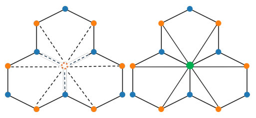
<figcaption class="paper-figure-caption"><b>Fig 2.</b> FIG. 3. Point defects in the Haldane model. Left: a vacancy is created by removing a lattice site along with all its hopping bonds (dotted lines). Right: an adatom is introduced as an on-site potential at a lattice site (green).</figcaption>
</figure>
<figure class="paper-figure-card">
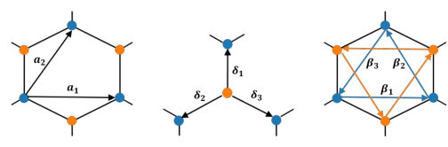
<figcaption class="paper-figure-caption"><b>Fig 3.</b> FIG. 1. Lattice vectors of the honeycomb lattice. Left: prim- itive lattice vectors a1,2. Center: nearest-neighbor vectors δ1,2,3. Right: next-nearest-neighbor vectors β1,2,3.</figcaption>
</figure>
<figure class="paper-figure-card">
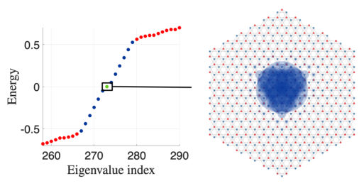
<figcaption class="paper-figure-caption"><b>Fig 4.</b> FIG. 4. Haldane model with a single vacancy (ν = 1). Left: energy spectrum showing a zero-energy defect mode (green), chiral edge states (blue), and bulk modes (red). Right: spatial probability density |ψ|2 of the zero mode, demonstrating lo- calization at the vacancy site. The presence of bulk-topology edge states confirms that the bulk gap and Chern number are unaffected by the vacancy.</figcaption>
</figure>
<figure class="paper-figure-card">

<figcaption class="paper-figure-caption"><b>Fig 5.</b> FIG. 5. Haldane model with two vacancies on the same sub- lattice (NA = 2, NB = 0, ν = 0). Left: energy spectrum showing two defect-induced modes (green) that hybridize and split symmetrically about zero energy, with edge states (blue) and bulk modes (red) also visible. The two modes are lifted from zero energy because the Z2 invariant ν = 0 provides no topological protection. Right: spatial probability density of one of the hybridized modes, showing localization around the two vacancy sites.</figcaption>
</figure>
</div>

<p><strong>Summary.</strong> This work analyzes how vacancies introduce localized topological structures into the Chern-insulating Haldane model. The key finding is that a $\mathbb{Z}_2$ invariant, determined by sublattice imbalance, dictates whether zero-energy modes exist at the defect site. This prediction is robustly confirmed through three independent physical measurements: wavefunction geometry, fractional charge accumulation, and current flow reversal.</p>
<p><strong>Why it may be interesting.</strong> The rigorous demonstration of multiple, distinct physical signatures confirming a single mathematical invariant ($\mathbb{Z}_2$) provides a powerful general principle for characterizing topological defects in condensed matter systems, applicable beyond the specific Haldane model.</p>
<details>
<summary>Detailed structure</summary>
<p><strong>Main problem.</strong> The paper investigates how local defects (vacancies) modify the topological properties of the Haldane model, specifically examining the interplay between bulk topology and defect-induced topology.</p>
<p><strong>Main result.</strong> A $\mathbb{Z}_2$ invariant ($
u$) governs the presence of protected zero-energy modes at vacancies, which is confirmed by three independent experimental signatures: wavefunction dislocations, fractional charge accumulation, and opposite circulating probability currents.</p>
<p><strong>Method.</strong> The analysis uses theoretical tools including the tenfold classification framework, Chern numbers ($C$), $\mathbb{Z}_2$ invariants ($
u$), and index theorems to derive relationships between bulk and defect topology.</p>
<p><strong>Model / system.</strong> The system is the Haldane model on a honeycomb lattice, which realizes a Chern-insulating phase. Defects studied include vacancies (bond removal) and adatoms (potential addition).</p>
<p><strong>Key observables.</strong> Chern number ($C=\pm 1$), $\mathbb{Z}_2$ defect invariant ($
u = C \cdot m \pmod 2$), zero-energy modes, fractional charge ($e/2$), and probability current direction.</p>
<p><strong>Important parameters / regimes.</strong> Sublattice imbalance $m = N_A - N_B$, which dictates the value of $
u$.</p>
<p><strong>Assumptions / limitations.</strong> The analysis relies on low-energy effective descriptions using Weyl symbols and assumes the applicability of topological invariants derived from the tenfold classification.</p>
<p><strong>Figures summary.</strong> Figures illustrate the clean Haldane spectrum, the appearance of zero-energy modes for single vacancies ($
u=1$), mode splitting for two vacancies ($
u=0$), wavefunction dislocations tracking phase winding, and charge/current distributions confirming the $\mathbb{Z}_2$ prediction.</p>
<p><strong>Paper structure.</strong> The paper establishes the bulk topology ($C$) and then introduces defects. It derives the coupling formula ($
u = C \cdot m \pmod 2$) and presents three complementary diagnostics (dislocations, fractional charge, current reversal) that all confirm this topological classification.</p>
</details>
<details>
<summary>Abstract</summary>
<p>We investigate the interplay between local defects and topology in the Haldane model within the framework of the tenfold classification. The Haldane model realizes a Chern-insulating phase characterized by an integer topological invariant ($C=\pm 1$) and supports chiral edge states. Introducing vacancies gives rise to localized states at the defect sites, classified by a $\mathbb{Z}_2$ invariant $ν= C\cdot m,\mathrm{mod},2$, where $m=N_A-N_B$ is the net sublattice imbalance of the vacancy configuration: an odd imbalance hosts a protected zero-energy mode, whereas an even imbalance does not. We identify three independent experimental signatures that distinguish these topological defect states from trivial (adatom) defects. First, vacancy-induced states exhibit characteristic dislocations in their wavefunction profiles that track the phase winding associated with the defect. Second, a fractional charge of $e/2$ accumulates at vacancy sites, while no such charge appears at adatoms. Third, the probability current circulating around a vacancy-induced state flows in the opposite direction to that of chiral edge states, in direct analogy with the current reversal produced by a vortex in a $p$-wave superconductor. All three signatures are in quantitative agreement with the $\mathbb{Z}_2$ prediction.</p>
</details>
<p><sub><a href="#top">↑ back to top</a></sub></p>

<p><a id="paper-2607.03678"></a></p>
<h3 id="hybrid-order-nonlinear-topological-phases"><a href="http://arxiv.org/abs/2607.03678v1">Hybrid-order nonlinear topological phases</a></h3>
<p><strong>Authors:</strong> Yu-Peng Ma, Ming-Jian Gao, Jun-Hong An<br>
<strong>Type:</strong> theory · <strong>Category:</strong> other · <strong>PDF:</strong> <a href="https://arxiv.org/pdf/2607.03678v1">https://arxiv.org/pdf/2607.03678v1</a><br>
<strong>Analysis basis:</strong> full PDF text, analyzed in chunks
<strong>Topic relevance:</strong> <code>analog quantum simulation</code> <strong>3/5</strong> · <code>driven-dissipative phase transition</code> <strong>2/5</strong> · <code>Frenkel-Kontorova</code> <strong>1/5</strong> · <code>Keldysh / 2PI / non-Gaussian methods</code> <strong>1/5</strong></p>
<div class="figure-strip-hint">↔ Scroll figures horizontally</div>
<div class="paper-figures-scroll">
<figure class="paper-figure-card">

<figcaption class="paper-figure-caption"><b>Fig 1.</b> FIG. 1. Hybrid-order topological phase in a nonlinear- eigenvalue system. Eigenvalue spectra (a) under the OBC to show the coexisting first-order boundary states at ω = 0 and second-order corner states at ω = −M −1 and (b) under the OBC along the x-axis and the PBC along the y-axis to confirm the presence of double-degenerate boundary modes at ω = 0. The colored points denote the IPR of the eigenstates with real eigenvalues. The gray points denote the real part of complex eigenvalues. Probability distributions of (c) the first-order boundary state at ω = 0 and (d) the second-order corner state at ω = −M −1. We use M = −0.5v−1, w = 0.5v, m = 1.5v, r = v, and nx = ny = 50.</figcaption>
</figure>
<figure class="paper-figure-card">

<figcaption class="paper-figure-caption"><b>Fig 2.</b> FIG. 2. Spectrum and topological invariants of the auxiliary system. (a) Eigenvalues of P(k, ω) in different ω when m = 1.5v. The red dashed line indicates λ = 0, whose intersections with the spectrum reproduce the real-ω spectrum in Fig. 1(a). The cyan dashed line denotes p0(ω), which equals to zero just at ω⋆= 0 and −M −1. (b) Eigenvalues and (c) Chern number C2 and mirror-graded winding number W2 of P(k, −M −1) in different m. (d) Eigenvalues of the auxiliary system in the strip geometry when m = −6v to confirm the presence of first-order boundary states at λ = 0. Diagrams of the first- order topological phases characterized by (e) C1 at ω⋆= 0 and (f) C2 at ω⋆= −M −1, and (g) the...</figcaption>
</figure>
<figure class="paper-figure-card">

<figcaption class="paper-figure-caption"><b>Fig 3.</b> Figure 2(a) shows the λ spectrum of the auxiliary sys- tem colored by IPR under the OBC in both the x and y directions. Highly localized states intersect with λ = 0</figcaption>
</figure>
<figure class="paper-figure-card">

<figcaption class="paper-figure-caption"><b>Fig 4.</b> FIG. 3. Three-dimensional nonlinear hybrid-order topologi- cal phase. (a) Real nonlinear eigenvalue spectrum under full OBCs. The color determined by ln IPR. The insets show the localized states near ω = −M −1 and ω = 0. (b) Auxiliary spectrum of P3D(k, ω). The red dashed line marks λ = 0, the cyan dashed line shows p0(ω). (c) and (d) is hinge state at ω = 0 and eight corner states at ω = −M −1. We take t1 = 1 and t2 = 15. For (e) and (f), we take t1 = t2 = 1. The state at ω = 0 is a side-surface state at (e), while the state at ω = −M −1 is a hinge state at (f). The (c-f) are colored by z.</figcaption>
</figure>
</div>

<p><strong>Summary.</strong> The paper tackles the challenge of applying bulk-boundary correspondence to complex nonlinear eigenvalue problems. By developing an auxiliary system formalism, it successfully classifies these systems and demonstrates how stacking a 2D model into 3D allows for the engineering of exotic hybrid-order topological phases (first-, second-, and third-order). This highlights stacking as a powerful tool for exploring nonlinearity in topology.</p>
<p><strong>Why it may be interesting.</strong> This work directly addresses the generalization of topological concepts (like BBC) from linear to nonlinear systems, which is a major frontier in condensed matter theory relevant to engineered quantum/photonic structures.</p>
<details>
<summary>Detailed structure</summary>
<p><strong>Main problem.</strong> The bulk-boundary correspondence (BBC) is poorly understood for nonlinear systems, especially those with multigap topologies, making topological description difficult.</p>
<p><strong>Main result.</strong> The study establishes a multiband bulk-boundary correspondence and identifies stacking engineering as a versatile platform for realizing hybrid-order topological phases in nonlinear systems.</p>
<p><strong>Method.</strong> An auxiliary-system formalism is developed to map the nonlinear eigenvalue problem into a formally linear pencil matrix, allowing topological classification via spectral analysis.</p>
<p><strong>Model / system.</strong> The work analyzes a 2D spinless square-lattice model with two degrees of freedom per unit cell. This system is extended to 3D by stacking along the z-axis using SSH chain concepts.</p>
<p><strong>Key observables.</strong> Topological invariants include Chern number ($C_1$) and mirror-graded winding number ($W_2$). State localization is diagnosed using the Inverse Participation Ratio (IPR).</p>
<p><strong>Important parameters / regimes.</strong> Stacking parameters, such as those governing uniform vs. dimerized stacking, dictate the resulting order of the topological phase (first-, second-, or third-order).</p>
<p><strong>Assumptions / limitations.</strong> The method relies on mapping the nonlinear problem to a formally linear auxiliary system; it extends previous work limited to single-gap topologies.</p>
<p><strong>Figures summary.</strong> Figure 1 illustrates the eigenvalue spectra under OBC and PBC, demonstrating the coexistence of first-order boundary states ($\omega=0$) and second-order corner states ($\omega=-M^{-1}$).</p>
<p><strong>Paper structure.</strong> The paper progresses from establishing the auxiliary system formalism for nonlinear BBC in 2D to analyzing how stacking this 2D structure into 3D yields distinct hybrid-order phases (e.g., uniform vs. dimerized stacking).</p>
</details>
<details>
<summary>Abstract</summary>
<p>The bulk-boundary correspondence (BBC), which relates topological invariants to boundary modes, is well understood for linear systems but remains an open question in the presence of nonlinearity, where multigap topologies make the BBC obscure and the topological description troublesome. We address this by developing an auxiliary-system formalism that enables topological classification of nonlinear-eigenvalue systems. In the two-dimension (2D) case, we show that two fixed eigenvalues can harbor first-order gapless boundary modes and second-order corner modes. Stacking this 2D system along the third dimension (3D) reveals distinct hybrid-order realizations. Under uniform stacking, the corner states in the $xy$ plane transform into hinge states along the $z$ axis, yielding a 3D second-order phase, while the gapless boundary states become side-surface states, yielding a 3D first-order phase. For dimerized stacking, these states are further confined to the two ends of the $z$ axis, yielding a 3D third-order phase, and localized at the hinges, yielding a 3D second-order phase. Our results establish a multiband bulk-boundary correspondence and identify stacking engineering as a versatile platform for exploring hybrid-order topological phases in nonlinear systems.</p>
</details>
<p><sub><a href="#top">↑ back to top</a></sub></p>
<hr>
<p>
<a href="index.html">← Index</a>
 · <a href="papers_07.html">← Previous</a> · <a href="papers_09.html">Next →</a>
</p>
<hr>

</body>
</html>
